Часть 1 · шаг 1 из 24 · ≈3 мин · формат: практикум на данных
Что нужно для безопасного бурения
Меры безопасности при бурении с уменьшением противодействия на пласты. Какие меры безопасности нужны, если бурят с уменьшенным противодавлением на пласты.
Почему этот шаг здесь
Глава открывается списком мер: признаки проявлений — одна из них, поэтому сначала видим всю картину. модельстр. 231
Суть
Если давление раствора на пласты уменьшают, нужны меры безопасности. Главные из них — прогноз давления, надёжные конструкции и оборудование, раннее обнаружение и ликвидация проявлений. модельстр. 231
Как это работает
Механизм
При бурении с уменьшением противодействия на пласты должны быть приняты меры безопасности. Противодействие — давление столба бурового раствора на пласт. модельстр. 231
Первая мера — прогнозировать пластовое (поровое) давление на всех стадиях проектирования и строительства скважины. модельстр. 231
Вторая — надёжные методы проектирования конструкций скважин. модельстр. 231
Четвёртая — технические системы, которые обнаруживают флюидопроявления на ранней стадии. модельстр. 231
Пятая — более совершенные методы расчёта забойного давления при бурении, спуско-подъёмных операциях и длительных остановках. модельстр. 231
Шестая — способы и технические средства ликвидации проявлений. модельстр. 231
Что это значит для данных
Безопасность держится на прогнозе давления и на раннем обнаружении: оба шага работают с данными. модельстр. 231
Если давление не спрогнозировано, противодавление может оказаться меньше пластового. модельстр. 231
Список мер похож на контур управления рисками: прогноз, контроль, реакция. гипотезамодельстр. 231
Аналогия
Похоже на эксплуатацию сервиса: прогноз нагрузки, надёжная архитектура, мониторинг и план восстановления. модель
Где аналогия не работает: Сервис можно перезапустить, а выброс из скважины необратим и опасен для людей.
Линза неэффективности
Входные данныеПрогноз пластового давления, конструкция скважиныРучные шагиПодбор оборудования устьяТочки сужденияНасколько можно уменьшить противодавлениеВремяВ главе не указаноТипичные ошибкиНет в главе
Новые понятия
противодействие на пласт — Давление столба бурового раствора, которое удерживает пластовые флюиды
пластовое (поровое) давление — Давление жидкости или газа в порах пласта
превентор — Устройство на устье, которое перекрывает скважину
забойное давление — Давление на дне скважины
спуско-подъёмные операции (СПО) — Спуск и подъём бурильной колонны
Источник
5 цитат автора со страницами
наблюдение. При бурении с уменьшением противодействия на пласты должны приниматься меры безопасности. пересказ модели
«Однако при бурении скважин с уменьшением противодействия на пласты должны быть приняты определенные меры безопасности, основными из которых являются:» — автор, стр. 231
наблюдение. Одна из основных мер — прогнозировать пластовое давление на всех стадиях проектирования и строительства. пересказ модели
«прогнозирование пластового (порового) давления на всех стадиях проектирования и строительства скважин;» — автор, стр. 231
наблюдение. Нужно надёжное устьевое оборудование: превенторы, дроссели, сепараторы, дегазаторы, запорная арматура. пересказ модели
«разработка и производство надежного устьевого оборудования – превенторов, дросселей, сепараторов, дегазаторов, запорной арматуры и др.;» — автор, стр. 231
наблюдение. Нужны системы обнаружения флюидопроявлений на ранней стадии. пересказ модели
«создание технических систем для обнаружения флюидопроявлений на ранней стадии их возникновения;» — автор, стр. 231
наблюдение. Нужны методы расчёта изменения забойного давления при бурении, спуско-подъёмных операциях и остановках. пересказ модели
«разработка более совершенных методов расчета изменения забойного давления при бурении, спускоподъемных операциях, а также во время длительных остановок;» — автор, стр. 231
Иллюстрации
Место шага «Что нужно для безопасного бурения» в главе: на что опирается и куда ведёт. класс B · схема
Часть 1 · шаг 2 из 24 · ≈4 мин · формат: практикум на данных
Как заметить приток в скважину
Признаки газонефтеводопроявлений. По каким сигналам на поверхности узнают, что пластовый флюид вошёл в скважину.
Почему этот шаг здесь
Сначала полный список признаков, дальше каждый разбирается отдельно. модельстр. 231, 232
Суть
Приток флюида меняет поток и свойства раствора на выходе. Практика выделяет восемь признаков, но последние три бывают и по другим причинам. модельстр. 231, 232
Как это работает
Механизм
Пластовые флюиды, поступив в ствол, меняют гидравлику циркуляционного потока и свойства раствора на выходе. Флюид — нефть, газ или вода из пласта. модельстр. 231
Сигналы на поверхности различаются по значимости. Она зависит от информативности сигнала, времени его прихода и интенсивности притока. модельстр. 231
Как делает специалист
Практикой бурения установлены признаки газонефтеводопроявлений (ГНВП): рост объёма (уровня) раствора в ёмкостях циркуляционной системы. модельстр. 231
Рост расхода (скорости) потока на выходе при неизменной подаче насосов. модельстр. 231
При подъёме колонны — меньший, чем по расчёту, объём доливаемого раствора. При спуске — больший, чем по расчёту, объём в приёмной ёмкости. модельстр. 231
Рост газосодержания раствора, рост механической скорости бурения, изменение свойств раствора, изменение давления на насосах. модельстр. 231
Нюансы
Последние три признака — механическая скорость, свойства раствора и давление на насосах — могут возникать не только из-за проявлений, но и по другим косвенным причинам. модельстр. 232
Частая ошибка
Любое изменение свойств раствора — точно проявление.
Что это значит для данных
Признаки — это измерения на поверхности: уровень, расход, газ, скорость бурения, давление. модельстр. 231, 232
Три признака неоднозначны: их надо сверять с другими, иначе будут ложные тревоги. модельстр. 231, 232
Признаки удобно сводить в один индекс риска с весами по значимости. гипотезамодельстр. 231, 232
Решение на данных
Признаки
рост уровня в ёмкостях
рост расхода на выходе
расхождение долива с расчётом
ПравилоПрямые признаки — объём и расход; скорость бурения, свойства раствора и давление насосов проверяют другими признакамиВыводПроявление вероятно, если сходятся несколько признаковКонтрпримерСкорость бурения растёт при провале в каверну — это не проявление, а риск поглощения
Аналогия
Похоже на набор алертов мониторинга: одни прямо показывают сбой, другие срабатывают и от посторонних причин. модель
Где аналогия не работает: Алерт можно проверить логами, а в скважине подтверждение приходит только по поверхности и с запаздыванием.
Как это делается сейчас
Сейчас уровень, расход, газ и давление пишут станции контроля бурения в реальном времени; набор признаков тот же. гипотезамодельстр. 231, 232
Линза неэффективности
Входные данныеУровень в ёмкостях, расход на выходе, долив, газ, скорость бурения, давление насосовРучные шагиСравнение с расчётными объёмамиТочки сужденияПризнак или посторонняя причинаВремяНепрерывно при буренииТипичные ошибкиСчитать косвенный признак прямым
Новые понятия
газонефтеводопроявление (ГНВП) — Поступление газа, нефти или воды из пласта в бурящуюся скважину
флюид — Жидкость или газ из пласта
приёмная ёмкость — Ёмкость, из которой насосы берут раствор
подача насосов — Объём раствора, который насосы закачивают в единицу времени
механическая скорость бурения — Скорость углубления скважины
Источник
7 цитат автора со страницами
наблюдение. Поступление пластовых флюидов отражается на гидравлике потока и свойствах раствора на выходе. пересказ модели
«Поступление пластовых флюидов в ствол бурящейся скважины определенным образом отражается на гидравлических характеристиках циркуляционного потока и свойствах бурового раствора, выходящего из скважины.» — автор, стр. 231
наблюдение. Значимость признаков зависит от информативности, времени поступления и интенсивности притока. пересказ модели
«Возникающие при этом на поверхности сигналы или признаки проявлений обладают различной значимостью в зависимости от информативности, времени поступления и интенсивности притока флюида.» — автор, стр. 231
наблюдение. Признак ГНВП — увеличение объёма (уровня) раствора в ёмкостях циркуляционной системы. пересказ модели
наблюдение. Признак ГНВП — рост расхода на выходе при неизменной подаче насосов. пересказ модели
«повышение расхода (скорости) выходящего потока бурового раствора из скважины при неизменной подаче буровых насосов;» — автор, стр. 231
наблюдение. При подъёме колонны признак — доливается меньше расчётного объёма. пересказ модели
«уменьшение против расчетного объема доливаемого в скважину бурового раствора при подъеме бурильной колонны;» — автор, стр. 231
наблюдение. При спуске колонны признак — в приёмной ёмкости больше расчётного объёма. пересказ модели
«увеличение против расчетного объема бурового раствора в приемной емкости при спуске бурильной колонны;» — автор, стр. 231
наблюдение. Последние три признака могут возникать не только из-за проявлений, но и по другим косвенным причинам. пересказ модели
«Последние три признака могут возникать не только в результате проявлений, но и по другим косвенным причинам.» — автор, стр. 232
Иллюстрации
Место шага «Как заметить приток в скважину» в главе: на что опирается и куда ведёт. класс B · схема
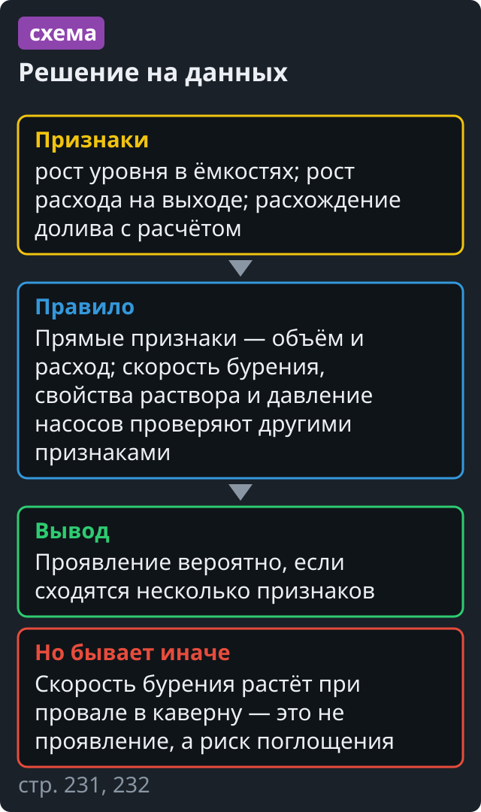
Решение на данных в шаге «Как заметить приток в скважину»: признаки, правило, вывод. класс B · схема
Проверь себя
Часть 1 · шаг 3 из 24 · ≈5 мин · формат: практикум на данных
Почему вдруг бурится быстрее
Увеличение механической скорости. Что означает рост механической скорости бурения и скачок проходки.
Почему этот шаг здесь
Первый разобранный признак: он может дать самую раннюю реакцию. модельстр. 232, 233
Суть
Устойчивый рост скорости бурения может означать вход в зону АВПД. Резкий скачок проходки в переходной зоне, как правило, говорит о быстром росте аномальности давления. Но скачок бывает и при провале в каверну. модельстр. 232, 233
Как это работает
Механизм
Устойчивое самопроизвольное увеличение механической скорости может служить признаком углубления в зону АВПД. АВПД — аномально высокое пластовое давление. В проходимых глинах при этом постоянно нарастает поровое давление. модельстр. 232
Резкое увеличение скорости называют скачком проходки. В переходной зоне он, как правило, свидетельствует о быстром росте аномальности давления на забое. модельстр. 232
Так бывает при небольшой мощности переходной зоны, при близости пластов-коллекторов с высоким давлением или при внедрении долота в высоконапорную залежь. модельстр. 232
Во всех этих случаях аномальность давления коллектора превышает запас противодавления раствора на забое. модельстр. 232
Как делает специалист
В зарубежной практике рост механической скорости более чем в 2 раза принято считать одним из признаков вскрытия пласта высокого давления и возможного проявления. модельстр. 232
Пример — механический каротаж скважины на Кубани (рис. 4.1). После роста механической скорости при глубине забоя 4274 м произошёл сильный выброс. Борьба с проявлением осложнила скважину, и углубить её дальше стало невозможно. модельстр. 232, 233
Скачок проходки следует рассматривать как признак возможного проявления. Такой подход во многих случаях оправдал себя как самая ранняя реакция на неуравновешенность давления на забое. модельстр. 232
Нюансы
В некоторых случаях скачок — следствие провала инструмента при вскрытии крупных трещин или карстовых каверн. Это характерно для известковых отложений и чаще ведёт не к проявлению, а к поглощению раствора. модельстр. 232
Частая ошибка
Скачок проходки всегда означает проявление.
Что это значит для данных
Механический каротаж — запись скорости бурения по глубине; рост скорости виден на нём раньше других признаков. модельстр. 232, 233
Тот же скачок даёт провал в каверну, поэтому одной кривой скорости для вывода мало. модельстр. 232, 233
Порог «рост более чем в 2 раза» можно задать как правило детектора аномалий. гипотезамодельстр. 232, 233
Решение на данных
Признаки
рост скорости более чем в 2 раза
переходная зона над АВПД
известняки с кавернами
ПравилоСкачок проходки — признак возможного проявленияВыводНасторожиться и проверить другие признакиКонтрпримерВ известняках скачок чаще означает провал в каверну и поглощение
Аналогия
Похоже на внезапное ускорение обработки запросов: может быть сбой проверки, а может быть пустая очередь. модель
Где аналогия не работает: Ложная тревога в ИТ безвредна, а провал в каверну — другая авария: поглощение раствора.
Линза неэффективности
Входные данныеМеханический каротаж: скорость бурения по глубинеРучные шагиСравнение скорости с предыдущим интерваломТочки сужденияСкачок от АВПД или провал в кавернуВремяСамый ранний признакТипичные ошибкиПринять провал в каверну за проявление и наоборот
Новые понятия
АВПД — Аномально высокое пластовое давление, выше нормального для этой глубины
скачок проходки — Резкий рост механической скорости бурения
переходная зона — Интервал, где давление растёт от нормального к аномальному
механический каротаж — Запись скорости бурения по глубине
поглощение — Уход бурового раствора в пласт
Источник
7 цитат автора со страницами
вывод. Устойчивый самопроизвольный рост механической скорости может указывать на вход в зону АВПД. пересказ модели
«Устойчивое самопроизвольное увеличение механической скорости может служить признаком углубления скважины в зону АВПД с постоянным нарастанием порового давления в проходимых глинистых породах.» — автор, стр. 232
вывод. Скачок проходки в переходной зоне, как правило, свидетельствует о быстром возрастании аномальности давления на забое. пересказ модели
«Резкое увеличение механической скорости, так называемый "скачок проходки", в переходной зоне свидетельствует, как правило, о быстром возрастании аномальности давления на забое.» — автор, стр. 232
наблюдение. Рост механической скорости более чем в 2 раза за рубежом считают одним из признаков вскрытия пласта высокого давления. пересказ модели
«В зарубежной практике быстрое повышение механической скорости бурения более чем в 2 раза принято считать одним из признаков вскрытия пласта высокого давления и возможности возникновения проявления.» — автор, стр. 232
наблюдение. В некоторых случаях скачок скорости — следствие провала инструмента в крупные трещины или карстовые каверны. пересказ модели
«В некоторых случаях резкое увеличение механической скорости бурения – следствие "провалов" бурового инструмента при вскрытии крупных трещин или карстовых каверн.» — автор, стр. 232
наблюдение. Такой провал характерен для известковых отложений и ведёт чаще не к проявлениям, а к поглощению раствора. пересказ модели
«Подобное явление характерно при разбуривании известковых отложений и ведет чаще не к проявлениям, а к поглощению бурового раствора.» — автор, стр. 232
наблюдение. На скважине Кубани после роста скорости при забое 4274 м произошёл сильный выброс. пересказ модели
«После увеличения механической скорости бурения при глубине забоя 4274 м произошел сильный выброс.» — автор, стр. 232
наблюдение. Скачок проходки следует рассматривать как признак возможного проявления: это самая ранняя реакция. пересказ модели
«"Скачок проходки" при бурении следует рассматривать как признак возможного проявления.» — автор, стр. 232
Иллюстрации
Место шага «Почему вдруг бурится быстрее» в главе: на что опирается и куда ведёт. класс B · схема
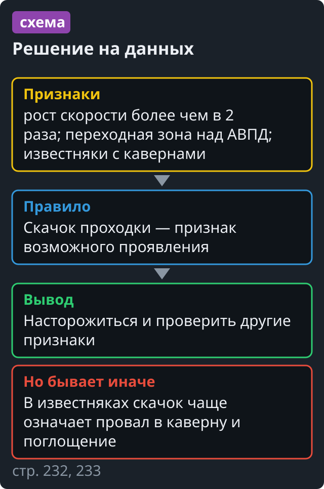
Решение на данных в шаге «Почему вдруг бурится быстрее»: признаки, правило, вывод. класс B · схема
Проверь себя
Часть 1 · шаг 4 из 24 · ≈4 мин · формат: ролик-разбор
Уровень в ёмкости растёт
Увеличение объёма бурового раствора в приёмных ёмкостях. Как рост уровня в приёмной ёмкости выдаёт приток и от чего зависит чувствительность уровнемера.
Почему этот шаг здесь
Главный прямой признак притока; его чувствительность зависит от площади ёмкости. модельстр. 232, 233, 234
Суть
Рост уровня раствора в приёмной ёмкости — прямой признак притока пластового флюида. Минимальный замечаемый приток равен погрешности уровнемера, умноженной на площадь поверхности раствора. Поэтому меньшая площадь делает контроль чувствительнее. модельстр. 232, 233, 234
Как это работает
Механизм
Увеличение объёма раствора в приёмных ёмкостях, видимое как рост уровня, — прямой признак притока пластового флюида в скважину. модельстр. 232
Уровень контролируют уровнемерами разных конструкций. Самые совершенные системы следят за объёмом в приёмных и запасных ёмкостях и пишут показания. В аварийных ситуациях есть звуковая и световая сигнализация. модельстр. 232, 233
Минимальный объём флюида, который заметит уровнемер, равен ΔVmin = εS. Здесь ε — абсолютная погрешность датчика, S — площадь поверхности жидкости в приёмных ёмкостях. модельстр. 233
Значит, точность зависит и от чувствительности датчика, и от площади уровня. Меняя площадь поверхности раствора, меняют минимальный замечаемый объём проявления (рис. 4.2). модельстр. 233
Как делает специалист
График на рис. 4.2 построен для стандартных блоков ёмкостей площадью 20 м². Выключение отдельных приёмных ёмкостей из циркуляции равнозначно повышению эффективности уровнемера. модельстр. 233, 234
Переход с 40 м² на 20 м² (одна из двух ёмкостей выключена) увеличивает реакцию в 2 раза. Отключение одной из трёх ёмкостей повышает чувствительность в 1,5 раза. модельстр. 234
Формулы
Минимальный замечаемый объём притока равен погрешности уровнемера, умноженной на площадь поверхности раствора модельстр. 233
ΔVmin — минимальный объём флюида, который фиксирует уровнемер, м³
ε — абсолютная погрешность датчика уровнемера
S — площадь поверхности жидкости в приёмных ёмкостях
Частая ошибка
Чем больше ёмкостей в циркуляции, тем надёжнее контроль.
Что это значит для данных
Прибор измеряет уровень; объём притока получают умножением на площадь. модельстр. 232, 233, 234
При большой площади малый приток тонет в погрешности датчика. модельстр. 232, 233, 234
Площадь ёмкостей стоит хранить вместе с показаниями уровня, иначе порог тревоги не пересчитать. гипотезамодельстр. 232, 233, 234
Решение на данных
Признаки
площадь поверхности раствора
погрешность уровнемера
ПравилоΔVmin = εSВыводЧтобы заметить меньший приток, уменьшают площадь: выключают лишние ёмкостиКонтрпримерУровень растёт и от добавок при утяжелении — его учитывают в исходном уровне
Аналогия
Похоже на точность метрики: одно и то же изменение заметнее в маленьком буфере, чем в огромном. модель
Где аналогия не работает: В буфере счётчик точный, а уровнемер имеет погрешность, и малый приток в большой ёмкости не виден совсем.
Как это делается сейчас
Сейчас уровень пишут датчики станции контроля и сразу считают прирост объёма; формула та же. гипотезамодельстр. 232, 233, 234
Линза неэффективности
Входные данныеУровень в ёмкостях, площадь ёмкостей, погрешность датчикаРучные шагиВыключение лишних ёмкостей из циркуляцииТочки сужденияКакой прирост считать притокомВремяНепрерывноТипичные ошибкиДержать в циркуляции все ёмкости и терять чувствительность
Новые понятия
уровнемер — Датчик уровня раствора в ёмкости
циркуляционная система — Ёмкости, насосы и линии, по которым раствор ходит через скважину
абсолютная погрешность датчика — На сколько показание может отличаться от правды
Источник
5 цитат автора со страницами
наблюдение. Рост объёма (уровня) раствора в приёмных ёмкостях — прямой признак притока пластового флюида. пересказ модели
«Увеличение объема бурового раствора в приемных емкостях, выражающееся повышением его уровня, является прямым признаком притока в скважину пластового флюида.» — автор, стр. 232
наблюдение. В аварийных ситуациях предусмотрена звуковая и световая сигнализация. пересказ модели
«В аварийных ситуациях предусмотрена звуковая и световая сигнализация.» — автор, стр. 233
наблюдение. Минимальный объём притока, который может быть зафиксирован уровнемером, равен погрешности датчика, умноженной на площадь поверхности раствора. пересказ модели
«Минимальный объем флюида (м³), поступившего в скважину, который может быть зафиксирован устройствами измерения уровня, определяется равенством» — автор, стр. 233
вывод. Точность уровнемера зависит и от чувствительности, и от площади измеряемого уровня. пересказ модели
«Точность реакции уровнемера, таким образом, зависит как от его чувствительности, так и от площади измеряемого уровня жидкости.» — автор, стр. 233
вывод. Переход с 40 м² на 20 м² увеличивает реакцию в 2 раза, отключение одной из трёх ёмкостей — в 1,5 раза. пересказ модели
«Переключение блоков площадью 40 м² на блок 20 м² (выключение одной из двух используемых емкостей) равнозначно увеличению реакции устройства в 2 раза, а отключение одной из трех используемых при циркуляции емкостей эквивалентно повышению чувствительности системы в 1,5 раза.» — автор, стр. 234
Иллюстрации
Место шага «Уровень в ёмкости растёт» в главе: на что опирается и куда ведёт. класс B · схема
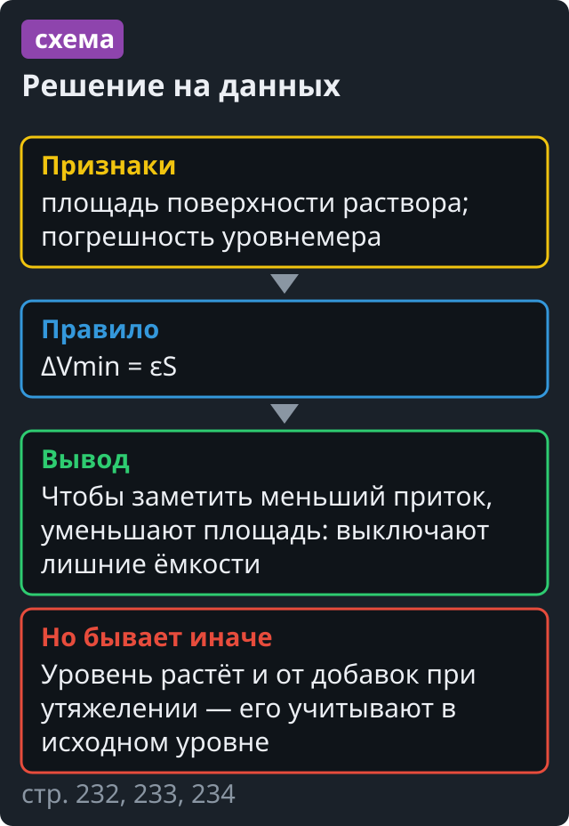
Решение на данных в шаге «Уровень в ёмкости растёт»: признаки, правило, вывод. класс B · схемаАнимация логики шага (признаки → правило → вывод), 15 с, без звука. класс B · схема · шаблон step_procedure; текст и страницы — из слоя
Проверь себя
Часть 1 · шаг 5 из 24 · ≈3 мин · формат: практикум на данных
Как настроить контроль уровня
Меры для своевременного обнаружения притока. Порядок действий, который делает контроль уровня в ёмкости надёжным.
Почему этот шаг здесь
После формулы — что конкретно делают на буровой, чтобы уровень был надёжным признаком. модельстр. 234
Суть
Чтобы вовремя заметить приток, приёмную ёмкость изолируют и уменьшают её поверхность. Исходный уровень задают заново и поправляют на добавки и потери. Переключения делают только с ведома бурильщика. модельстр. 234
Как это работает
Как делает специалист
Для своевременного обнаружения притока изолируют приёмную ёмкость, через которую идёт циркуляция, от других. модельстр. 234
Уменьшают поверхность приёмной ёмкости установкой перегородки. модельстр. 234
Устанавливают исходный уровень раствора после возобновления круговой циркуляции. модельстр. 234
Корректируют исходный уровень на объём добавок при обработке и утяжелении раствора, на сильные осадки, на потери при очистке и испарении. модельстр. 234
Переключают насосы и ёмкости, перераспределяют объёмы раствора только с ведома бурильщика. модельстр. 234
Если бурят в отложениях с сероводородом, для этих работ бурение останавливают. модельстр. 234
Что это значит для данных
Исходный уровень — точка отсчёта: без поправок на добавки рост уровня ложно выглядит как приток. модельстр. 234
Неучтённое переключение ёмкости ломает ряд уровня, поэтому оно только с ведома бурильщика. модельстр. 234
Каждое переключение ёмкостей стоит записывать как событие рядом с рядом уровня. гипотезамодельстр. 234
Аналогия
Похоже на базовую линию в мониторинге: после деплоя её переустанавливают, иначе алерты ложные. модель
Где аналогия не работает: Базовую линию в ИТ можно пересчитать задним числом, а пропущенный приток уже в скважине.
Линза неэффективности
Входные данныеУровень, объёмы добавок, журнал переключенийРучные шагиИзоляция ёмкости, перегородка, установка исходного уровняТочки сужденияКакие изменения уровня объяснены добавкамиВремяПри каждом изменении циркуляцииТипичные ошибкиПереключить ёмкость без ведома бурильщика
Новые понятия
бурильщик — Оператор, который ведёт бурение на буровой
круговая циркуляция — Движение раствора: насос — трубы — забой — кольцевое пространство — ёмкость
утяжеление раствора — Повышение плотности раствора добавками
сероводород — Ядовитый газ, который может быть в пластах
Источник
5 цитат автора со страницами
наблюдение. Приёмную ёмкость, через которую идёт циркуляция, изолируют от других. пересказ модели
«изолируют приемную емкость, через которую ведется циркуляция, от других;» — автор, стр. 234
наблюдение. Поверхность приёмной ёмкости уменьшают перегородкой. пересказ модели
«уменьшают поверхность приемной емкости установкой перегородки;» — автор, стр. 234
наблюдение. Исходный уровень корректируют на добавки, осадки и потери при очистке и испарении. пересказ модели
«корректируют положение исходного уровня с учетом объема введенных добавок при обработке и утяжелении бурового раствора, интенсивного выпадения осадков или потерь раствора при его очистке и испарении;» — автор, стр. 234
наблюдение. Переключения насосов и ёмкостей делают только с ведома бурильщика. пересказ модели
«переключают насосы, приемную емкость, перераспределяют объемы бурового раствора только с ведома бурильщика;» — автор, стр. 234
наблюдение. Если бурят в отложениях с сероводородом, для этих работ бурение останавливают. пересказ модели
«останавливают процесс бурения для выполнения указанных работ, если бурят в отложениях, содержащих сероводород.» — автор, стр. 234
Иллюстрации
Место шага «Как настроить контроль уровня» в главе: на что опирается и куда ведёт. класс B · схема
Часть 1 · шаг 6 из 24 · ≈4 мин · формат: практикум на данных
Из скважины выходит больше, чем закачали
Увеличение скорости потока (расхода) бурового раствора на выходе из скважины. Почему приток ускоряет выходящий поток и как это замечают расходомером.
Почему этот шаг здесь
Второй прямой признак; его сверяют с уровнем в ёмкостях. модельстр. 234, 235
Суть
Стенки скважины не дают потоку расшириться, поэтому приток выталкивает раствор быстрее. Индикатор потока замечает проявление, когда расход на выходе выше на 10 % и более. Чем больше подача насосов, тем быстрее обнаружение. модельстр. 234, 235
Как это работает
Механизм
Поток раствора в скважине ограничен жёсткими стенками. Поэтому поступивший флюид увеличивает скорость, а значит, и расход жидкости, движущейся впереди. модельстр. 234
Как делает специалист
Разность объёмных скоростей на входе и выходе меряют дифференциальными расходомерами. модельстр. 234
На практике выходящий поток контролируют индикатором потока. Он позволяет обнаружить начавшееся проявление, когда расход на выходе выше на 10 % и более. модельстр. 234
Результаты расходомера надо сопоставлять с уровнем в приёмных ёмкостях: рост расхода приводит к росту уровня. модельстр. 234
Эффективность обнаружения газопроявлений расходомером существенно зависит от подачи насосов. При большей подаче время обнаружения при том же притоке газа сокращается: ΔQ2 = n·ΔQ1. модельстр. 235
ΔQ1 и ΔQ2 — приращения расхода на выходе в один момент при первой и второй подаче; вторая подача больше первой в n раз. модельстр. 235
Формулы
Минимальный замечаемый прирост расхода равен приведённой погрешности прибора, умноженной на его максимальный расход и делённой на 100 модельстр. 234
При подаче насосов в n раз больше приращение расхода на выходе в тот же момент тоже в n раз больше модельстр. 235
ΔQ1 — приращение расхода на выходе при первой подаче
ΔQ2 — приращение расхода на выходе при второй подаче
n — во сколько раз вторая подача больше первой
Что это значит для данных
Расходомер меряет поток; приток выводят из разницы входа и выхода. модельстр. 234, 235
Расход и уровень должны расти вместе; расхождение говорит об ошибке датчика. модельстр. 234, 235
Сверку расхода и уровня можно автоматизировать как правило согласованности двух рядов. гипотезамодельстр. 234, 235
Решение на данных
Признаки
расход на выходе выше входа
рост уровня в ёмкости
ПравилоПроявление замечают при превышении расхода на выходе на 10 % и болееВыводСверить с уровнем и действоватьКонтрпримерМалый приток ниже δ·Qmax/100 прибор не покажет
Аналогия
Похоже на сверку входящего и исходящего трафика: на выходе больше, чем пришло, — значит, есть посторонний источник. модель
Где аналогия не работает: Трафик меряется точно, а у расходомера приведённая погрешность, и малый приток ниже порога не виден.
Линза неэффективности
Входные данныеРасход на входе и выходе, подача насосовРучные шагиСверка расхода с уровнем в ёмкостяхТочки сужденияПревышение расхода выше порога прибора или нетВремяНепрерывноТипичные ошибкиСмотреть расход без сверки с уровнем
Новые понятия
расход — Объём раствора, проходящий за единицу времени
дифференциальный расходомер — Прибор, который меряет разность расходов на входе и выходе
индикатор потока — Прибор контроля потока на выходе из скважины
приведённая погрешность — Погрешность прибора в процентах от верхнего предела измерений
Источник
4 цитаты автора со страницами
вывод. Из-за жёстких стенок поступление флюида увеличивает скорость и расход жидкости впереди. пересказ модели
«В результате ограничения потока бурового раствора в скважине жесткими стенками поступление пластового флюида вызывает увеличение скорости, а следовательно, и расхода движущейся впереди жидкости.» — автор, стр. 234
наблюдение. Индикатор потока обнаруживает проявление при превышении расхода на выходе на 10 % и более. пересказ модели
«На практике расход (скорость) выходящего потока бурового раствора контролируют с помощью индикатора потока, позволяющего обнаружить начавшееся проявление при превышении расхода на выходе на 10 % и более.» — автор, стр. 234
наблюдение. Расход на выходе нужно сопоставлять с уровнем в ёмкостях. пересказ модели
«Результаты измерения расхода потока на выходе необходимо сопоставить с данными измерений уровня приемных емкостей, поскольку повышение расхода раствора приводит к увеличению уровня в емкостях.» — автор, стр. 234
наблюдение. Эффективность обнаружения газопроявлений расходомером существенно зависит от подачи насосов. пересказ модели
«Эффективность обнаружения газопроявлений расходомером существенно зависит от подачи насосов.» — автор, стр. 235
Иллюстрации
Место шага «Из скважины выходит больше, чем закачали» в главе: на что опирается и куда ведёт. класс B · схема
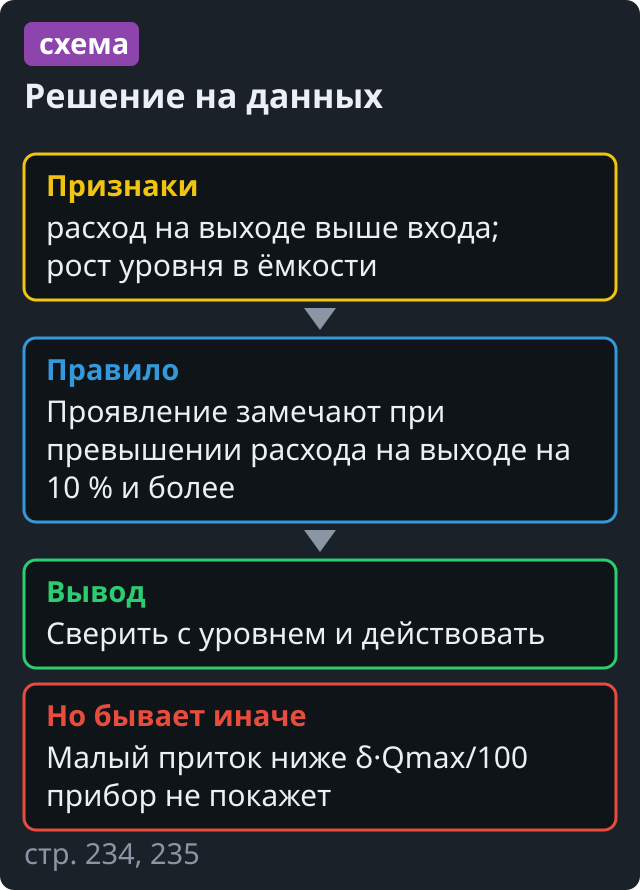
Решение на данных в шаге «Из скважины выходит больше, чем закачали»: признаки, правило, вывод. класс B · схема
Проверь себя
Часть 1 · шаг 7 из 24 · ≈3 мин · формат: карточки
Откуда в растворе газ
Газирование бурового раствора. Причины газирования раствора — связанные и не связанные с недостатком противодавления.
Почему этот шаг здесь
Газ в растворе — признак неоднозначный: сначала разбираемся, откуда он берётся. модельстр. 235
Суть
Газ попадает в раствор по разным причинам, не только из-за проявления. При газе выше фона раствор дегазируют и ищут причину. Глины переходной зоны часто загазованы сами по себе. модельстр. 235
Как это работает
Механизм
Насыщение раствора газом может быть связано с недоуравновешенностью пластового давления, а может быть и не связано с ней. модельстр. 235
Глины переходной зоны часто загазованы, и при их разбуривании в раствор поступает некоторое количество газа. модельстр. 235
Газ может идти из выбуренной породы. Может идти и из приствольной части массива, если там есть пропластки повышенной песчанистости, линзы песка и другие разности с флюидами под высоким давлением. модельстр. 235
Как делает специалист
При содержании газа выше фонового принимают меры по дегазации раствора и выясняют причины поступления газа. модельстр. 235
Частая ошибка
Газ в растворе всегда значит, что началось проявление.
Что это значит для данных
Газоанализатор измеряет газ в растворе; причину газа выводят из обстановки бурения. модельстр. 235
Фоновый газ из загазованных глин маскирует газ притока. модельстр. 235
Фоновый уровень газа стоит считать по интервалу, а не одним числом на скважину. гипотезамодельстр. 235
Аналогия
Похоже на шум в логах ошибок: часть ошибок фоновая, часть — от реального сбоя. модель
Где аналогия не работает: Фон ошибок можно отфильтровать по коду, а газ из породы и газ притока химически одинаковы.
Линза неэффективности
Входные данныеГазосодержание раствора, литология переходной зоныРучные шагиДегазация, поиск причиныТочки сужденияФоновый газ или притокВремяПри росте газа выше фонаТипичные ошибкиСчитать любой газ проявлением
фоновое газосодержание — Обычный уровень газа в растворе на данном интервале
недоуравновешенность давления — Давление раствора на забое меньше пластового
Источник
3 цитаты автора со страницами
наблюдение. Газирование раствора может быть как связано, так и не связано с недоуравновешенностью пластового давления. пересказ модели
«Насыщение бурового раствора газом может происходить по различным причинам — как связанным, так и не связанным с недоуравновешенностью пластового давления в скважине.» — автор, стр. 235
наблюдение. При газе выше фонового раствор дегазируют и выясняют причины поступления газа. пересказ модели
«При увеличении в буровом растворе содержания газа выше фонового следует принять меры по его дегазации и выявить причины его поступления.» — автор, стр. 235
наблюдение. Глины переходной зоны часто загазованы, и газ при их разбуривании идёт в раствор. пересказ модели
«Глины переходной зоны часто загазованы, и их разбуривание сопровождается поступлением в раствор определенного количества газа.» — автор, стр. 235
Иллюстрации
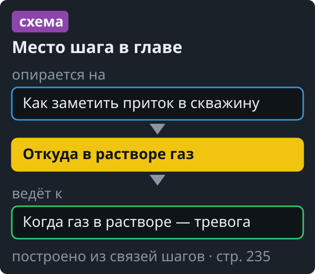
Место шага «Откуда в растворе газ» в главе: на что опирается и куда ведёт. класс B · схема
Часть 1 · шаг 8 из 24 · ≈4 мин · формат: практикум на данных
Когда газ в растворе — тревога
Газирование как признак проявления. По каким приметам газирование указывает на приток газа из-за недостатка противодавления.
Почему этот шаг здесь
Узнав источники газа, разбираемся, по каким приметам газ говорит именно о недостатке противодавления. модельстр. 235, 236
Суть
Признак проявления — газирование продолжается при промывке после остановки бурения. Ещё признак — газ растёт в забойных пачках, когда циркуляцию останавливают. В переходной зоне газ обычно растёт устойчиво, и раствор утяжеляют ступенями. модельстр. 235, 236
Как это работает
Механизм
Признак проявления, то есть поступления газа из пород из-за недостатка противодавления, — газирование продолжается во время промывки после прекращения бурения. модельстр. 235
Кроме того, газосодержание растёт в забойных пачках при остановке циркуляции, например для наращивания колонны. Это объясняется снижением давления на газирующий пласт и более долгим газированием забойной порции. модельстр. 235
Газирование возможно и из слабопроницаемых непродуктивных коллекторов, залегающих отдельно или в глинистой покрышке АВПД. Признаки проявления из них такие же. модельстр. 235
Как делает специалист
Такое присутствие газа не требует немедленного утяжеления раствора. модельстр. 235
Обычно по мере углубления в переходную зону газосодержание устойчиво растёт: в газосодержащих породах повышаются пористость и давление. модельстр. 235, 236
Тогда прибегают к ступенчатому утяжелению раствора, так как не исключена встреча с высокопродуктивным скоплением газа, способным произвести выброс. модельстр. 236
Частая ошибка
Любой газ в растворе требует немедленно утяжелить раствор.
Что это значит для данных
Важна динамика газа: продолжается ли он после остановки бурения и растёт ли в забойных пачках. модельстр. 235, 236
Одна точка газосодержания не отличает газ из шлама от газа притока. модельстр. 235, 236
Газ до и после остановки бурения удобно сравнивать как пару событий. гипотезамодельстр. 235, 236
Решение на данных
Признаки
газ продолжается при промывке после остановки бурения
газ растёт в забойных пачках после остановки циркуляции
ПравилоЭто признак притока газа из-за недостатка противодавленияВыводКонтролировать газ; немедленное утяжеление не требуетсяКонтрпримерЕсли газ прекратился с остановкой бурения, он шёл с выбуренной породой
Аналогия
Похоже на проверку утечки памяти: если потребление растёт и при остановленной нагрузке, течёт сама система. модель
Где аналогия не работает: Утечку можно найти профилировщиком, а источник газа под землёй виден только по раствору на поверхности.
Линза неэффективности
Входные данныеГазосодержание во время бурения, промывки и после остановки циркуляцииРучные шагиСравнение газа до и после остановки буренияТочки сужденияУтяжелять ли раствор и насколькоВремяПри каждой остановке циркуляцииТипичные ошибкиУтяжелять раствор сразу при любом газе
Новые понятия
промывка — Циркуляция раствора без углубления скважины
забойная пачка — Порция раствора, стоявшая у забоя
наращивание колонны — Добавление трубы к бурильной колонне
ступенчатое утяжеление — Повышение плотности раствора по шагам
покрышка — Непроницаемый слой над пластом
Источник
6 цитат автора со страницами
наблюдение. Признак проявления — газирование продолжается во время промывки после прекращения бурения. пересказ модели
«Признак проявления, т.е. поступления газа из окружающих пород вследствие недостатка противодавления со стороны скважины, — продолжающееся газирование раствора во время промывки после прекращения бурения.» — автор, стр. 235
наблюдение. Кроме того, в этом случае газосодержание растёт в забойных пачках при прекращении циркуляции. пересказ модели
«Кроме того, в этом случае наблюдается повышение газосодержания раствора в забойных пачках при прекращении циркуляции, например, для наращивания бурильной колонны.» — автор, стр. 235
вывод. Это объясняется снижением давления на газирующий пласт и увеличением времени газирования забойной порции. пересказ модели
«Это объясняется снижением давления на газирующий пласт и увеличением времени газирования забойной порции раствора.» — автор, стр. 235
наблюдение. Такое присутствие газа не требует немедленного утяжеления раствора. пересказ модели
«Такое присутствие газа не требует немедленного утяжеления бурового раствора.» — автор, стр. 235
наблюдение. Газирование возможно из слабопроницаемых непродуктивных коллекторов, признаки такие же. пересказ модели
«Газирование раствора возможно из слабопроницаемых непродуктивных коллекторов, залегающих самостоятельно или в глинистой покрышке АВПД.» — автор, стр. 235
наблюдение. При устойчивом росте газа в переходной зоне раствор утяжеляют ступенчато, так как не исключена встреча со скоплением газа, способным произвести выброс. пересказ модели
«При этом прибегают к ступенчатому утяжелению бурового раствора, так как не исключается встреча с высокопродуктивным локальным скоплением газа, способным произвести выброс.» — автор, стр. 236
Иллюстрации
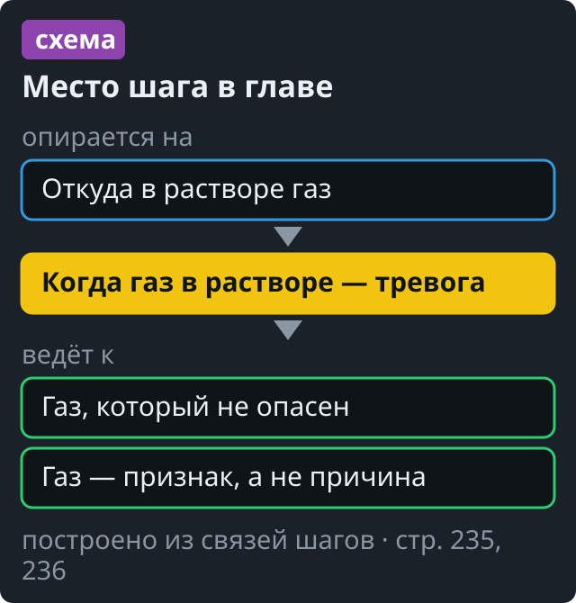
Место шага «Когда газ в растворе — тревога» в главе: на что опирается и куда ведёт. класс B · схема
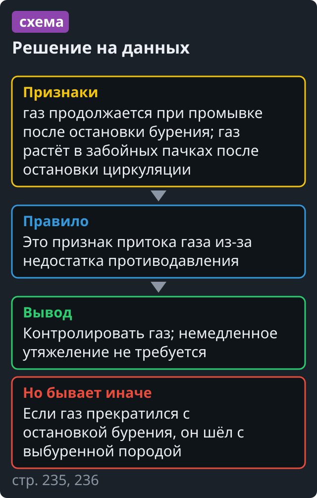
Решение на данных в шаге «Когда газ в растворе — тревога»: признаки, правило, вывод. класс B · схема
Проверь себя
Часть 2 · шаг 9 из 24 · ≈4 мин · формат: карточки
Газ, который не опасен
Газ в растворе без проявления. Случаи газирования без притока и как газ контролируют.
Почему этот шаг здесь
Газ бывает и при запасе противодавления: важно знать такие случаи, чтобы не путать их с проявлением. модельстр. 236
Суть
Газ может идти с выбуренной породой при запасе противодавления — тогда он пропадает с остановкой бурения. Газ часто выходит после спуско-подъёма. Если газ поступает, его содержание постоянно контролируют. модельстр. 236
Как это работает
Механизм
Газ может поступать с выбуренной породой при проходке газонасыщенных пластов, даже при запасе противодавления. Тогда остановка бурения прекращает поступление газа. модельстр. 236
Часто газированный раствор выходит при восстановлении циркуляции после спуско-подъёма. Причиной может быть чрезмерное снижение давления при подъёме колонны или физико-химические превращения в растворе. модельстр. 236
Как делает специалист
Газ только в забойной пачке после спуска колонны и промывки обычно не приводит к выбросу. модельстр. 236
Однако если давление в бурильных трубах снижается и раствор расплёскивается, газовую пачку вымывают при закрытом устье через регулируемый дроссель. модельстр. 236
Если газ поступает в раствор, его содержание должно постоянно контролироваться станциями контроля бурения или газокаротажными станциями. Сведения о концентрации газа — основа решения о дальнейшей технологии бурения. модельстр. 236
Нюансы
В мировой практике при хорошо изученной геологии в некоторых случаях бурили при постоянном газировании. Отдельные линзы разбуривали с непрерывной циркуляцией до нескольких суток. модельстр. 236
Считается, что концентрация газа до 70 % безопасна в отношении выбросов. Такой опыт есть и в СНГ, но технологию надо перестраивать по принципам «сбалансированного» бурения. модельстр. 236
Частая ошибка
Если в растворе газ, бурить дальше нельзя.
Что это значит для данных
Газ с выбуренной породой прекращается с остановкой бурения: это отличает его от притока. модельстр. 236
Газ после спуско-подъёма маскируется под приток; его сверяют с давлением в трубах. модельстр. 236
Отметки о спуско-подъёме стоит хранить рядом с рядом газа, чтобы объяснять всплески. гипотезамодельстр. 236
Аналогия
Похоже на всплеск ошибок после деплоя: часто это прогрев, а не поломка, но мониторинг не выключают. модель
Где аналогия не работает: Прогрев сервиса заканчивается сам, а газовую пачку при падении давления надо вымывать через дроссель.
Как это делается сейчас
Сейчас газ контролируют станции геолого-технологических исследований в реальном времени. гипотезамодельстр. 236
Линза неэффективности
Входные данныеГазосодержание, давление в трубах, этап работРучные шагиВымыв пачки через дроссельТочки сужденияГаз из шлама, после СПО или притокВремяПри восстановлении циркуляцииТипичные ошибкиПринять газ после СПО за выброс или пропустить падение давления
Новые понятия
выбуренная порода (шлам) — Обломки породы, которые раствор выносит с забоя
дроссель (штуцер) — Регулируемое сужение для выпуска потока под контролем давления
газокаротажная станция — Лаборатория на буровой, которая непрерывно меряет газ в растворе
сбалансированное бурение — Бурение при давлении раствора, близком к пластовому
Источник
6 цитат автора со страницами
наблюдение. При запасе противодавления газ может идти с выбуренной породой; остановка бурения прекращает его поступление. пересказ модели
«Газ может поступать в раствор вместе с выбуренной породой при проходке газонасыщенных пластов и наличии запаса противодавления.» — автор, стр. 236
наблюдение. Часто газированный раствор выходит при восстановлении циркуляции после спуско-подъёмных операций. пересказ модели
«Часто выход газированного раствора наблюдается при восстановлении циркуляции после проведения спускоподъемных операций.» — автор, стр. 236
наблюдение. Газ только в забойной пачке после спуска и промывки обычно не приводит к выбросу. пересказ модели
«Наличие газа только в забойной пачке, наблюдаемое после спуска бурильной колонны и промывки, обычно не приводит к выбросу.» — автор, стр. 236
наблюдение. Если давление в трубах снижается и раствор расплёскивается, пачку вымывают при закрытом устье через дроссель. пересказ модели
«Однако в случае снижения давления в бурильных трубах и расплескивания бурового раствора вымывать газовую пачку следует при закрытом устье через регулируемый дроссель.» — автор, стр. 236
наблюдение. Считается, что концентрация газа до 70 % безопасна в отношении выбросов. пересказ модели
«Считается, что концентрация газа до 70 % безопасна в отношении возникновения выбросов.» — автор, стр. 236
наблюдение. Если газ поступает в раствор, его содержание должно постоянно контролироваться. пересказ модели
«Если отмечается поступление газа в буровой раствор, то содержание его должно постоянно контролироваться.» — автор, стр. 236
Иллюстрации
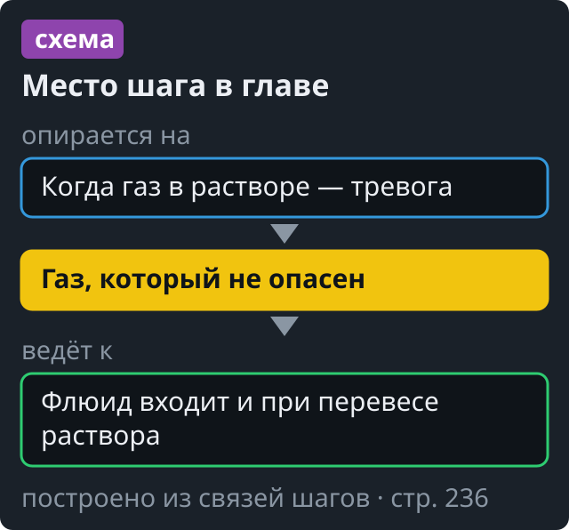
Место шага «Газ, который не опасен» в главе: на что опирается и куда ведёт. класс B · схема
Часть 2 · шаг 10 из 24 · ≈3 мин · формат: ролик-разбор
Газ — признак, а не причина
Расчёт дебита газа и роль газирования. Как найти дебит газа по плотности раствора и почему газирование — признак, а не причина выброса.
Почему этот шаг здесь
После признаков газа — как его посчитать и почему газированный раствор сам выброса не вызывает. модельстр. 236, 237
Суть
Дебит газа находят по подаче насосов и плотностям чистого и газированного раствора. Газ снижает плотность у устья, но обычно мало меняет давление на забое. Поэтому газирование — признак условий притока, а не причина выброса. модельстр. 236, 237
Как это работает
Механизм
Газ снижает плотность раствора у устья, но, как показано ранее, обычно не приводит к существенному падению давления на забое. модельстр. 237
Поэтому нет оснований считать насыщение раствора газом причиной выброса. Скорее газирование — признак появления условий поступления газа в скважину. модельстр. 237
Как делает специалист
Если газ контролируют по плотности раствора, дебит газа в атмосферных условиях находят по формуле 4.1: g1 = Q·(ρ0/ρгр − 1). Q — подача насосов, ρ0 и ρгр — плотность негазированного и газированного раствора. модельстр. 236
Содержание газа в единице объёма раствора в восходящем потоке, приведённое к нормальным условиям, — формула 4.2: a0 = gr/Q. модельстр. 237
Если выход газированного раствора сопровождается ростом уровня в приёмных ёмкостях, нужно повышать плотность раствора и ликвидировать начавшееся проявление. модельстр. 237
Формулы
Дебит газа в атмосферных условиях равен подаче насосов, умноженной на отношение плотностей чистого и газированного раствора минус единица модельстр. 236
g1 — дебит газа в атмосферных условиях
Q — подача насосов
ρ0 — плотность негазированного раствора
ρгр — плотность газированного раствора
Содержание газа в единице объёма раствора равно дебиту газа, делённому на подачу насосов модельстр. 237
a0 — содержание газа в единице объёма раствора, приведённое к нормальным условиям
gr — дебит газа
Q — подача насосов
Частая ошибка
Газированный раствор сам по себе вызывает выброс, потому что становится легче.
Что это значит для данных
Дебит газа не меряют напрямую: его выводят из подачи насосов и двух плотностей. модельстр. 236, 237
Плотность газированного раствора у устья занижена и не отражает давление на забое. модельстр. 236, 237
Формулу 4.1 можно считать автоматически по ряду плотности на выходе. гипотезамодельстр. 236, 237
Решение на данных
Признаки
газированный раствор на выходе
рост уровня в ёмкостях
ПравилоГаз вместе с ростом уровня — начавшееся проявлениеВыводПовысить плотность раствора и ликвидировать проявлениеКонтрпримерГаз без роста уровня — признак, требующий контроля, а не утяжеления сразу
Аналогия
Похоже на рост задержки ответа: это симптом перегрузки, а не её причина. модель
Где аналогия не работает: Задержку можно измерить в любой точке, а плотность раствора на забое и у устья разная из-за расширения газа.
Линза неэффективности
Входные данныеПодача насосов, плотность чистого и газированного раствораРучные шагиРасчёт дебита газа по формуле 4.1Точки сужденияЕсть ли одновременно рост уровняВремяПри газированииТипичные ошибкиСчитать газированный раствор причиной выброса
Новые понятия
дебит газа — Объём газа, поступающий за единицу времени
нормальные условия — Стандартные давление и температура, к которым приводят объём газа
Источник
4 цитаты автора со страницами
вывод. Газ снижает плотность раствора у устья, но обычно не приводит к существенному падению давления на забое. пересказ модели
«Появление газа в буровом растворе, хотя и снижает его плотность у устья, но, как было показано ранее, обычно не приводит к существенному падению давления на забое.» — автор, стр. 237
вывод. Нет оснований рассматривать насыщение раствора газом как причину выброса. пересказ модели
«Поэтому нет оснований рассматривать насыщение раствора газом как причину выброса.» — автор, стр. 237
вывод. Газирование раствора должно рассматриваться как признак условий поступления газа в скважину. пересказ модели
«Скорее наоборот, газирование раствора должно рассматриваться как признак появления условий поступления газа в скважину.» — автор, стр. 237
наблюдение. Газированный раствор вместе с ростом уровня в ёмкостях требует повысить плотность и ликвидировать проявление. пересказ модели
«Выход из скважины газированного раствора, сопровождающийся повышением уровня в приемных емкостях, требует повышения плотности бурового раствора и принятия мер по ликвидации начавшегося проявления.» — автор, стр. 237
Иллюстрации
Место шага «Газ — признак, а не причина» в главе: на что опирается и куда ведёт. класс B · схема
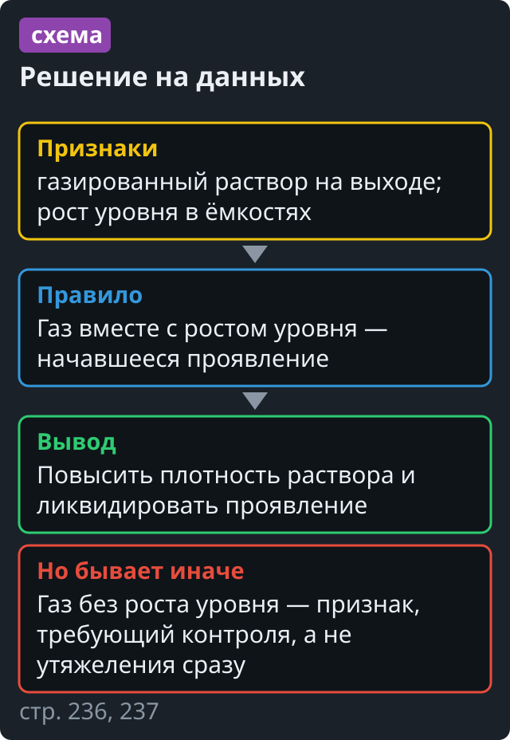
Решение на данных в шаге «Газ — признак, а не причина»: признаки, правило, вывод. класс B · схемаАнимация логики шага (признаки → правило → вывод), 15 с, без звука. класс B · схема · шаблон step_procedure; текст и страницы — из слоя
Проверь себя
Часть 2 · шаг 11 из 24 · ≈4 мин · формат: ролик-разбор
Что показывает давление насосов
Изменения давления на буровых насосах. Почему приток меняет давление на насосах и почему падение давления не значит слабое проявление.
Почему этот шаг здесь
Ещё один признак: он объясняется сообщающимися сосудами и ведёт себя неоднозначно. модельстр. 237, 238
Суть
Флюид легче раствора, поэтому баланс давлений в кольцевом пространстве и трубах нарушается, и давление на насосах падает. Газ при подъёме расширяется, и давление снижается всё сильнее. При высоком пластовом давлении давление в трубах может, наоборот, вырасти. модельстр. 237, 238
Как это работает
Механизм
Плотность пластовых флюидов ниже плотности раствора. Поэтому прежний баланс давлений в кольцевом пространстве и бурильных трубах нарушается; особенно при газопроявлениях. модельстр. 237
Кольцевое пространство и трубы — сообщающиеся сосуды. Давления перераспределяются, и давление на насосах снижается. модельстр. 237
Снижение давления в нагнетательной линии: Δp = g·lф·(ρ − ρф). lф — высота столба флюида в кольцевом пространстве, ρ и ρф — плотность раствора и флюида. модельстр. 237
Если поступил газ, при подъёме он расширяется, высота столба растёт, и давление на насосах постоянно снижается. При большой массе газа снижение может быть существенным. модельстр. 237
Нюансы
При высоком пластовом давлении и продуктивности пласта возможно не снижение, а повышение давления в трубах. Оно возникает в момент притока из-за быстрой смены забойных условий и роста сопротивлений в затрубном пространстве. модельстр. 237
Отмечается связь между ростом давления на стояке в первые моменты выброса и его интенсивностью. модельстр. 237
Если наблюдается только снижение давления на насосах, это ещё не говорит о слабом проявлении. Снижение может вызвать газовая пачка, вошедшая при подъёме колонны из-за свабирования. модельстр. 238
Формулы
Снижение давления в нагнетательной линии равно ускорению свободного падения, умноженному на высоту столба флюида и разность плотностей раствора и флюида модельстр. 237
Δp — уменьшение давления в нагнетательной линии
g — ускорение свободного падения
lф — высота столба флюида в кольцевом пространстве
ρ — плотность бурового раствора
ρф — плотность пластового флюида
Частая ошибка
Если давление на насосах только снижается, проявление слабое.
Что это значит для данных
Давление на насосах меряют; высоту и плотность столба флюида выводят из него по формуле. модельстр. 237, 238
Знак изменения давления не определяет силу проявления: оно может и упасть, и вырасти. модельстр. 237, 238
Скорость падения давления может говорить о расширении газа сильнее, чем само значение. гипотезамодельстр. 237, 238
Решение на данных
Признаки
давление на насосах падает
давление на стояке растёт в начале притока
ПравилоПадение давления — признак лёгкого флюида в затрубье; рост давления в начале — признак интенсивного выбросаВыводОценивать вместе с объёмом и расходомКонтрпримерПадение давления от газовой пачки после свабирования при сильном проявлении
Аналогия
Похоже на два сообщающихся буфера: если в один попали лёгкие данные, уровни перераспределяются. модель
Где аналогия не работает: В буферах ничего не расширяется, а газ при подъёме увеличивает объём и меняет давление постоянно.
Линза неэффективности
Входные данныеДавление на насосах и стояке, плотность раствораРучные шагиОценка высоты столба флюидаТочки сужденияПадение давления — слабый приток или газовая пачкаВремяНепрерывноТипичные ошибкиСчитать падение давления признаком слабого проявления
Новые понятия
кольцевое (затрубное) пространство — Зазор между бурильными трубами и стенкой скважины
сообщающиеся сосуды — Соединённые объёмы, где давления выравниваются
нагнетательная линия — Линия от насосов к бурильным трубам
стояк — Вертикальная труба на буровой, через которую раствор идёт в колонну
свабирование — Подсасывание флюида в скважину при подъёме колонны
Источник
5 цитат автора со страницами
вывод. Плотность пластовых флюидов ниже плотности раствора, поэтому баланс давлений в кольцевом пространстве и трубах нарушается. пересказ модели
«Плотность пластовых флюидов, поступающих во время проявления в скважину, ниже плотности бурового раствора.» — автор, стр. 237
вывод. Если поступил газ, по мере подъёма он расширяется и давление на насосах постоянно снижается. пересказ модели
«Если в скважину поступил газ, то по мере его подъема высота столба увеличивается в результате расширения и давления на насосах постоянно снижается.» — автор, стр. 237
наблюдение. При высоком пластовом давлении и продуктивности возможно не снижение, а повышение давления в трубах. пересказ модели
«При высоких значениях пластового давления и продуктивности пласта возможно не снижение, а повышение давления в бурильных трубах.» — автор, стр. 237
наблюдение. Отмечается связь между ростом давления на стояке в начале выброса и его интенсивностью. пересказ модели
«Отмечается связь между увеличением давления на стояке в начальные моменты выброса и его интенсивностью.» — автор, стр. 237
вывод. Если наблюдается только снижение давления на насосах, это ещё не свидетельствует о слабом проявлении. пересказ модели
«Если наблюдается только снижение давления на насосах, то это еще не свидетельствует о слабой интенсивности проявлений.» — автор, стр. 238
Иллюстрации
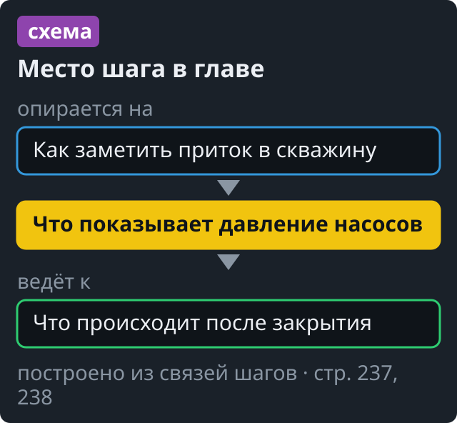
Место шага «Что показывает давление насосов» в главе: на что опирается и куда ведёт. класс B · схема
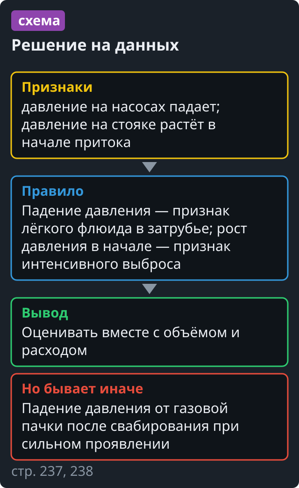
Решение на данных в шаге «Что показывает давление насосов»: признаки, правило, вывод. класс B · схемаАнимация логики шага (признаки → правило → вывод), 15 с, без звука. класс B · схема · шаблон step_procedure; текст и страницы — из слоя
Проверь себя
Часть 2 · шаг 12 из 24 · ≈5 мин · формат: практикум на данных
Сколько долить при подъёме труб
Объём доливаемого раствора при подъёме колонны. Почему при подъёме колонны падает забойное давление и как приток выдаёт себя по доливу.
Почему этот шаг здесь
Большинство проявлений связано со спуско-подъёмом, поэтому их контролю отведено отдельное место. модельстр. 238
Суть
Большинство проявлений связано со спуско-подъёмом: давление на забой падает. При подъёме приток выдаёт себя тем, что доливать приходится меньше, чем объём поднятого металла и плёнки. Уменьшение долива против контрольного более чем на 1 м³ не допускается. модельстр. 238
Как это работает
Механизм
Большинство ГНВП и выбросов связано со спуско-подъёмными операциями: во время них снижается давление на забой, и флюиды могут поступать в скважину. модельстр. 238
При подъёме колонны забойное давление уменьшается: уровень раствора в скважине снижается, а движение труб вызывает колебания гидродинамического давления. модельстр. 238
Как делает специалист
Приток при спуско-подъёме вовремя обнаруживают постоянным контролем уровня в скважине и объёмов долива и вытеснения в сравнении с объёмом поднятых или спущенных труб. модельстр. 238
Проявление при подъёме распознают по тому, что доливается меньше, чем объём металла извлечённых труб плюс объём плёнки раствора на их внутренних стенках. Если обтираторы не используют, учитывают и плёнку снаружи. модельстр. 238
Не допускается уменьшение объёма долива против контрольного более чем на 1 м³. модельстр. 238
Фактический долив определяют мерной ёмкостью с уровнемером. Её объём в 1,2–1,5 раза больше объёма колонны в скважине: после подъёма пяти свечей уровнемер должен сдвинуться не менее чем на два деления. модельстр. 238
Целесообразна схема, где центробежный насос подаёт раствор в скважину, а избыток по сливной трубе возвращается в мерник. По той же трубе в мерник сливается раствор, вытесненный при спуске. Такая схема всё шире применяется. модельстр. 238
Частая ошибка
Пока не бурят, а только поднимают или спускают трубы, проявления не опасны.
Что это значит для данных
Сравнивают фактический долив с расчётным: объём металла труб плюс плёнка. модельстр. 238
Если не учесть плёнку снаружи без обтираторов, расчётный долив занижен и приток можно пропустить. модельстр. 238
Контрольный долив можно считать автоматически по числу поднятых свечей. гипотезамодельстр. 238
Решение на данных
Признаки
фактический долив
объём металла поднятых труб плюс плёнка
ПравилоДолив меньше контрольного более чем на 1 м³ недопустимВыводПризнак начавшегося проявления при подъёмеКонтрпримерБез учёта плёнки снаружи (нет обтираторов) расчёт занижен
Аналогия
Похоже на сверку остатков: сколько ушло со склада и сколько должно было уйти по накладным. модель
Где аналогия не работает: Расхождение до 1 м³ допустимо: часть раствора остаётся плёнкой на трубах, а не теряется.
Как это делается сейчас
Сейчас долив меряют доливной ёмкостью с датчиком уровня (trip tank), принцип тот же. гипотезамодельстр. 238
Линза неэффективности
Входные данныеОбъём поднятых труб, объём плёнки, показания мерной ёмкостиРучные шагиСчёт свечей и сверка доливаТочки сужденияРасхождение в пределах 1 м³ или притокВремяВесь подъём колонныТипичные ошибкиНе учесть плёнку снаружи труб
Новые понятия
долив — Раствор, который доливают в скважину взамен поднятых труб
свеча — Несколько свинченных труб, которые поднимают одним куском
мерная ёмкость (мерник) — Небольшая ёмкость с уровнемером для учёта долива
обтиратор — Устройство, снимающее раствор с наружной поверхности труб при подъёме
гидродинамическое давление — Давление от движения жидкости и труб
Источник
5 цитат автора со страницами
наблюдение. Большинство ГНВП и выбросов связано со спуско-подъёмными операциями. пересказ модели
«Известно, что большинство газонефтеводопроявлений и выбросов связано со спускоподъемными операциями, во время которых снижается давление на забой и становится возможным поступление пластовых флюидов в скважину.» — автор, стр. 238
вывод. При подъёме колонны забойное давление уменьшается из-за снижения уровня и колебаний гидродинамического давления. пересказ модели
«Во время подъема бурильной колонны забойное давление уменьшается в результате снижения уровня бурового раствора в скважине и колебаний гидродинамического давления, вызываемого движением труб.» — автор, стр. 238
наблюдение. Проявление при подъёме распознаётся по уменьшению долива против объёма металла извлечённых труб и плёнки. пересказ модели
«Проявление, начавшееся в процессе подъема бурильной колонны, распознается по уменьшению объема бурового раствора, доливаемого в скважину, по сравнению с объемом металла бурильных труб, извлекаемых из скважины, и объемом бурового раствора, остающегося на внутренних стенках труб в виде пленки.» — автор, стр. 238
наблюдение. Не допускается уменьшение долива против контрольного более чем на 1 м³. пересказ модели
«Не допускается уменьшение объема доливаемой жидкости по сравнению с контрольным более чем на 1 м³.» — автор, стр. 238
наблюдение. Объём мерной ёмкости должен быть в 1,2–1,5 раза больше объёма колонны, чтобы после подъёма пяти свечей уровнемер сдвинулся не менее чем на два деления. пересказ модели
«Объем емкости должен быть в 1,2–1,5 раза больше объема, занимаемого бурильной колонной в скважине, т.е. она должна быть такой, чтобы после подъема пяти свечей показание уровнемера изменилось бы не менее чем на два деления.» — автор, стр. 238
Иллюстрации
Место шага «Сколько долить при подъёме труб» в главе: на что опирается и куда ведёт. класс B · схема
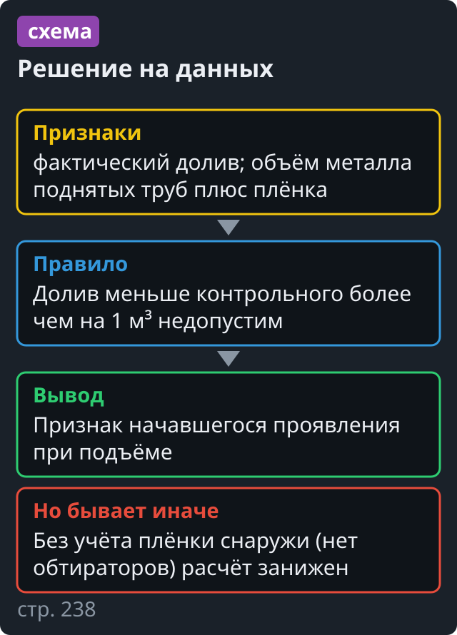
Решение на данных в шаге «Сколько долить при подъёме труб»: признаки, правило, вывод. класс B · схема
Проверь себя
Часть 2 · шаг 13 из 24 · ≈3 мин · формат: практикум на данных
Сколько выльется при спуске труб
Объём вытесняемого раствора при спуске колонны. Как при спуске колонны приток выдаёт себя лишним вытесненным объёмом.
Почему этот шаг здесь
Зеркальная ситуация к подъёму: при спуске раствор вытесняется, и лишний объём выдаёт приток. модельстр. 238, 239
Суть
При спуске колонны признак проявления — в приёмной ёмкости больше раствора, чем расчётный объём вытеснения. Если вытеснено больше расчётного и перелив не прекращается, флюид поступает в ствол. Прирост 1 м³ против контрольного указывает на начало проявления. модельстр. 238, 239
Как это работает
Механизм
При спуске бурильной или обсадной колонны признак проявления — рост объёма раствора в приёмной ёмкости против расчётного объёма вытеснения. модельстр. 238, 239
Если вытесняемый объём больше расчётного и перелив из скважины не прекращается, пластовый флюид поступает в ствол. модельстр. 239
Как делает специалист
Вытесняемый объём контролируют по одной из приёмных ёмкостей; остальные должны быть отключены от желобной системы. модельстр. 239
Рост объёма в приёмной ёмкости на 1 м³ против контрольного указывает на начало проявления. Объём сверяют с контрольным после спуска каждых 10 свечей. модельстр. 239
Что это значит для данных
Сравнивают вытесненный объём с расчётным объёмом спущенного металла. модельстр. 238, 239
Если в циркуляции несколько ёмкостей, прирост размазывается и не виден. модельстр. 238, 239
Порог 1 м³ и шаг 10 свечей задают правило проверки в данных. гипотезамодельстр. 238, 239
Решение на данных
Признаки
вытесненный объём
расчётный объём вытеснения
перелив после остановки
ПравилоПрирост на 1 м³ против контрольного — начало проявленияВыводОстановить спуск и действовать по процедуреКонтрпримерКратковременный перелив, который прекращается, не говорит о притоке
Аналогия
Похоже на сверку записей при загрузке: должно прийти ровно столько, сколько отправили. модель
Где аналогия не работает: Записи не появляются сами, а флюид из пласта добавляет объём без команды.
Линза неэффективности
Входные данныеОбъём спущенных труб, уровень в одной приёмной ёмкостиРучные шагиОтключение других ёмкостей, сверка каждые 10 свечейТочки сужденияПерелив прекращается или нетВремяВесь спуск колонныТипичные ошибкиДержать подключёнными несколько ёмкостей
Новые понятия
вытеснение — Раствор, выталкиваемый из скважины спускаемыми трубами
обсадная колонна — Трубы, которыми крепят стенки скважины
перелив — Самопроизвольный выход раствора из скважины
желобная система — Желоба, по которым раствор идёт от устья в ёмкости
Источник
4 цитаты автора со страницами
наблюдение. При спуске колонны признак проявления — рост объёма в приёмной ёмкости против расчётного объёма вытеснения. пересказ модели
«знак проявления — увеличение объема бурового раствора в приемной емкости против расчетного объема вытеснения.» — автор, стр. 239
вывод. Если вытесняемый объём превышает расчётный и перелив не прекращается, флюид поступает в ствол. пересказ модели
«Если вытесняемый объем превышает расчетный и в скважине не прекращается перелив, то это свидетельствует о поступлении пластового флюида в ствол скважины.» — автор, стр. 239
наблюдение. Рост объёма в приёмной ёмкости на 1 м³ против контрольного указывает на начало проявления. пересказ модели
«Увеличение объема в приемной емкости на 1 м³ по сравнению с контрольным объемом указывает на начало проявления.» — автор, стр. 239
наблюдение. Объём вытеснения сверяют с контрольным после спуска каждых 10 свечей. пересказ модели
«Объем вытесняемой жидкости сверяется с контрольным после спуска каждых 10 свечей.» — автор, стр. 239
Иллюстрации
Место шага «Сколько выльется при спуске труб» в главе: на что опирается и куда ведёт. класс B · схема
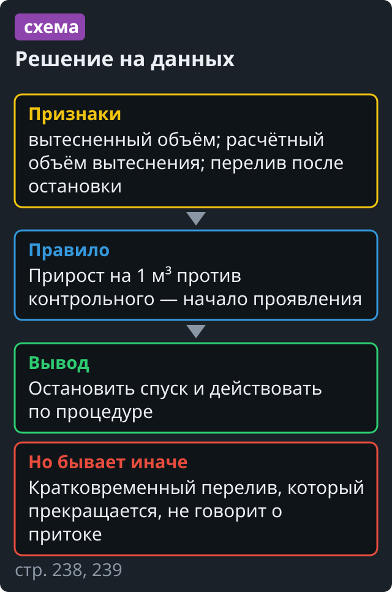
Решение на данных в шаге «Сколько выльется при спуске труб»: признаки, правило, вывод. класс B · схема
Часть 2 · шаг 14 из 24 · ≈3 мин · формат: практикум на данных
Раствор меняет свойства
Изменение показателей свойств бурового раствора. Какие свойства раствора меняет приток и почему судить надо по нескольким сразу.
Почему этот шаг здесь
Последний признак из списка: он важен при слабых проявлениях, но неоднозначен. модельстр. 239
Суть
Приток меняет плотность, водоотдачу, вязкость, напряжение сдвига, сопротивление и хлориды раствора. Эти признаки важны при слабых проявлениях. Но свойства меняются и по другим причинам, поэтому судят по нескольким показателям сразу. модельстр. 239
Как это работает
Механизм
При поступлении флюида меняются показатели раствора: плотность, водоотдача, вязкость, статическое и динамическое напряжение сдвига, удельное сопротивление, концентрация хлоридов и другие. модельстр. 239
Как делает специалист
Эти признаки имеют значение при слабых проявлениях, когда приток долго ниже разрешающей способности средств распознавания выбросов или этих средств нет. модельстр. 239
Нюансы
Информация об изменениях свойств раствора приходит на поверхность с запаздыванием: нужно время, чтобы забойные пачки дошли до устья. модельстр. 239
Отклонение свойств раствора могут вызвать и другие факторы. Поэтому достовернее судить о проявлении по изменению нескольких показателей одновременно; к тому же их информативность различна. модельстр. 239
Частая ошибка
Чтобы заметить проявление, достаточно одного изменившегося свойства раствора.
Что это значит для данных
Свойства раствора меряют в лаборатории или датчиками; вывод о притоке делают по сочетанию. модельстр. 239
Одно отклонение может быть от обработки раствора, а не от притока. модельстр. 239
Показатели удобно объединять в составной признак с весами по информативности. гипотезамодельстр. 239
Решение на данных
Признаки
меняется несколько показателей раствора одновременно
ПравилоСудить о проявлении по нескольким показателям, не по одномуВыводПризнак слабого проявленияКонтрпримерИзменение одного показателя после химической обработки раствора
Аналогия
Похоже на диагностику по нескольким метрикам сразу: одна метрика шумит, совпадение нескольких — сигнал. модель
Где аналогия не работает: Метрики сервиса независимы, а свойства раствора меняются вместе от одной обработки.
Линза неэффективности
Входные данныеПлотность, вязкость, водоотдача, сопротивление, хлоридыРучные шагиЛабораторные замеры раствораТочки сужденияОтклонение от притока или от обработкиВремяПри слабых проявленияхТипичные ошибкиДелать вывод по одному показателю
Новые понятия
водоотдача — Способность раствора отдавать воду в пласт
напряжение сдвига — Усилие, нужное, чтобы сдвинуть раствор с места
хлориды — Соли хлора; их рост в растворе может говорить о притоке солёной пластовой воды
разрешающая способность — Наименьшее изменение, которое прибор может заметить
Источник
5 цитат автора со страницами
наблюдение. При поступлении флюида меняются плотность, водоотдача, вязкость, напряжения сдвига, сопротивление и хлориды раствора. пересказ модели
«При поступлении пластового флюида в ствол бурящейся скважины происходит изменение показателей свойств бурового раствора: плотности, водоотдачи, вязкости, статического и динамического напряжения сдвига, удельного сопротивления, концентрации хлоридов и др.» — автор, стр. 239
наблюдение. Эти признаки важны при слабых проявлениях, когда приток долго ниже разрешающей способности средств распознавания или при их отсутствии. пересказ модели
«Указанные здесь признаки имеют значение при слабых проявлениях, когда приток из пласта длительное время остается ниже разрешающей способности установленных средств распознавания выбросов или при их отсутствии.» — автор, стр. 239
наблюдение. Причиной отклонения свойств раствора могут быть и другие факторы. пересказ модели
«Следует иметь в виду, что причиной отклонения свойств буровых растворов от заданных значений могут быть и другие факторы.» — автор, стр. 239
вывод. Достовернее судить о проявлении по изменению нескольких показателей одновременно. пересказ модели
«Поэтому более достоверно судить о проявлении можно по изменению нескольких показателей одновременно.» — автор, стр. 239
наблюдение. Информация об изменении свойств раствора поступает на поверхность с запаздыванием на время подъёма забойных пачек. пересказ модели
«Информация об изменениях показателей свойств бурового раствора поступает на поверхность с запаздыванием на время, требующееся для продвижения забойных пачек к устью скважины.» — автор, стр. 239
Иллюстрации
Место шага «Раствор меняет свойства» в главе: на что опирается и куда ведёт. класс B · схема
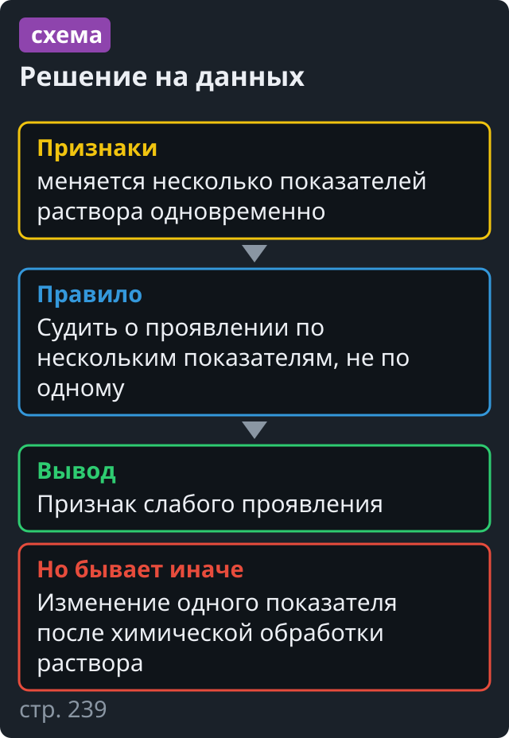
Решение на данных в шаге «Раствор меняет свойства»: признаки, правило, вывод. класс B · схема
Проверь себя
Часть 2 · шаг 15 из 24 · ≈2 мин · формат: интерактив
Флюид входит и при перевесе раствора
Причины поступления пластовых флюидов в скважину при бурении. Флюиды поступают в скважину даже при забойном давлении выше пластового.
Почему этот шаг здесь
Перед ликвидацией проявлений глава отмечает: флюиды входят в скважину постоянно, но не всякий вход опасен. модельстр. 239
Суть
При проводке скважины пластовые флюиды поступают в неё постоянно, даже когда забойное давление выше пластового. Такое поступление практически не может создать предвыбросовую ситуацию. модельстр. 239
Как это работает
Механизм
В процессе проводки скважины пластовые флюиды постоянно поступают в неё, в том числе когда забойное давление pзаб выше пластового pпл. Причины ГНВП систематизированы на рис. 4.3. модельстр. 239
Поступление флюидов при забойном давлении выше пластового практически не может привести к предвыбросовой ситуации. модельстр. 239
Частая ошибка
Если забойное давление выше пластового, флюид в скважину не попадает вовсе.
Что это значит для данных
Сам факт газа или флюида в растворе не означает, что давление на забое ниже пластового. модельстр. 239
Признаки надо оценивать по динамике, а не по наличию флюида. модельстр. 239
Систематизацию причин на рис. 4.3 можно превратить в дерево причин для разбора инцидентов. гипотезамодельстр. 239
Аналогия
Похоже на фоновый трафик в защищённую сеть: пакеты идут всегда, но это ещё не атака. модель
Где аналогия не работает: Фоновый трафик можно отфильтровать правилом, а флюид из пласта отфильтровать нельзя — только уравновесить давлением.
Линза неэффективности
Входные данныеЗабойное и пластовое давлениеРучные шагиНет в главеТочки сужденияОпасен ли наблюдаемый вход флюидаВремяНет в главеТипичные ошибкиСчитать любой вход флюида проявлением
Новые понятия
забойное давление pзаб — Давление на дне скважины
пластовое давление pпл — Давление флюида в пласте
предвыбросовая ситуация — Состояние, когда выброс уже вероятен
Источник
2 цитаты автора со страницами
наблюдение. Пластовые флюиды постоянно поступают в скважину, в том числе при превышении забойного давления над пластовым. пересказ модели
«В процессе проводки скважины пластовые флюиды постоянно поступают в скважину, в том числе при превышении забойным давлением пластового .» — автор, стр. 239
вывод. Поступление флюидов при забойном давлении выше пластового практически не может привести к предвыбросовой ситуации. пересказ модели
«Конечно, поступление флюидов из пласта в скважину при превышении забойным давлением пластового практически не может привести к созданию предвыбросовой ситуации.» — автор, стр. 239
Иллюстрации
Место шага «Флюид входит и при перевесе раствора» в главе: на что опирается и куда ведёт. класс B · схема
Часть 2 · шаг 16 из 24 · ≈2 мин · формат: текст
Зачем укрепляют устье газовых скважин
Усиление устьевой части газовых скважин. Почему в газовых скважинах усиливают устьевую часть дополнительной колонной.
Почему этот шаг здесь
Конец предыдущего параграфа на выданной странице: связь конструкции устья с проявлениями. модельстр. 312
Суть
Резьбы стандартных обсадных труб недостаточно герметичны, и в газовых скважинах часто возникают межколонные проявления. Поэтому устьевую часть усиливают дополнительной обсадной колонной. модельстр. 312
Как это работает
Механизм
В ряде нефтепромысловых районов при обосновании конструкций газовых скважин стремятся укрепить устьевую часть. модельстр. 312
Причина: резьбовые соединения стандартных обсадных труб недостаточно герметичны. При эксплуатации газовых скважин часто возникают межколонные проявления, а в тяжёлых случаях — грифоны. модельстр. 312
Как делает специалист
Устьевую часть усиливают дополнительной обсадной колонной перед спуском эксплуатационной. модельстр. 312
Что это значит для данных
Межколонное давление — показатель негерметичности резьб. модельстр. 312
Грифон — выход газа на поверхность вне скважины, тяжёлый случай негерметичности. модельстр. 312
Межколонные давления по фонду скважин можно отслеживать как индикатор риска. гипотезамодельстр. 312
Аналогия
Похоже на усиление периметра: где стандартные соединения слабые, ставят второй барьер. модель
Где аналогия не работает: Второй барьер в сети не стареет, а резьбы в газовой скважине теряют герметичность со временем.
Линза неэффективности
Входные данныеКонструкция скважины, тип флюидаРучные шагиВыбор дополнительной колонныТочки сужденияНужно ли усиливать устьеВремяПри проектированииТипичные ошибкиНет в главе
Новые понятия
эксплуатационная колонна — Обсадная колонна, через которую добывают продукцию
межколонное проявление — Выход газа в зазор между обсадными колоннами
грифон — Прорыв газа или флюида на поверхность вокруг скважины
Источник
2 цитаты автора со страницами
наблюдение. Резьбовые соединения стандартных обсадных труб недостаточно герметичны, и в газовых скважинах часто возникают межколонные проявления. пересказ модели
«Вызвано это тем, что резьбовые соединения стандартных обсадных труб недостаточно герметичны и при эксплуатации газовых скважин часто возникают межколонные проявления и в наиболее тяжелых случаях грифонообразования.» — автор, стр. 312
наблюдение. Устьевую часть усиливают дополнительной обсадной колонной перед спуском эксплуатационной. пересказ модели
«Устьевая часть конструкции усиливается за счет дополнительной обсадной колонны перед спуском эксплуатационной.» — автор, стр. 312
Иллюстрации
Место шага «Зачем укрепляют устье газовых скважин» в главе: на что опирается и куда ведёт. класс B · схема
Часть 3 · шаг 17 из 24 · ≈4 мин · формат: интерактив
Что стоит на устье скважины
Компоновка устьевого оборудования. Из чего состоит обвязка устья для контроля скважины при высоких давлениях (рис. 4.16).
Почему этот шаг здесь
Чтобы понять, как закрывают скважину, надо знать, из чего состоит оборудование устья. модельстр. 312, 313, 314
Суть
В сложных условиях на устье ставят компоновку из нескольких превенторов, манифольдов и линий. Она позволяет контролировать скважину при высоких давлениях и ликвидировать проявления. При проявлении скважину надо как можно раньше перекрыть, а затем заглушить приток. модельстр. 312, 313, 314
Как это работает
Механизм
В зарубежной практике в сложных геологических условиях, когда есть опасность нефтегазопроявлений, на устье монтируют сложную компоновку наземного оборудования из нескольких превенторов. модельстр. 312
На рис. 4.16 — схема обвязки устья при вскрытии и испытании пластов в глубоких скважинах на суше и на море со стационарных или полупогружных платформ. модельстр. 312, 313
В компоновку входят: нагнетательный манифольд 1, штуцерный манифольд 2, кольцевой превентор 3, трубные превенторы 6 и 14, превентор 8 с глухими плашками, напорная линия 12 насосов высокого давления. модельстр. 312
Также — линия глушения 11, дополнительная линия глушения 13, штуцерная линия 9 и дополнительная штуцерная линия 15 к штуцерному манифольду, устьевая головка 16. модельстр. 312
Как делает специалист
Компоновка позволяет контролировать скважину при высоких пластовых давлениях и ликвидировать нефте- и газопроявления. Она подходит и для вскрытия, и для испытания пластов. модельстр. 312
При нефтегазопроявлении скважину необходимо как можно раньше перекрыть, а затем заглушить образовавшийся приток. модельстр. 312, 314
Что это значит для данных
Каждый элемент схемы — состояние «открыт/закрыт», которое можно записывать как событие. модельстр. 312, 313, 314
По схеме без состояний задвижек нельзя понять, куда идёт поток. модельстр. 312, 313, 314
Похоже на сеть с резервными маршрутами: основной путь, запасной путь и аварийный выключатель. модель
Где аналогия не работает: В сети маршрут переключается мгновенно, а задвижка под большим перепадом давления может не открыться.
Как это делается сейчас
Сейчас превенторы управляются гидравлически с пульта; состав компоновки в целом тот же. гипотезамодельстр. 312, 313, 314
Линза неэффективности
Входные данныеСхема обвязки устьяРучные шагиМонтаж и опрессовка оборудованияТочки сужденияКакая компоновка нужна для данных давленийВремяДо вскрытия пластаТипичные ошибкиНет в главе
Новые понятия
компоновка устьевого оборудования — Набор превенторов, задвижек и линий на устье
кольцевой превентор — Превентор, закрывающий зазор вокруг трубы любого диаметра
трубный превентор (трубные плашки) — Превентор, плашки которого обжимают трубу
глухие плашки — Плашки, закрывающие скважину без трубы
манифольд — Узел труб и задвижек для распределения потока
линия глушения — Линия для закачки раствора при глушении
испытание пласта — Проверка притока из пласта
Источник
4 цитаты автора со страницами
наблюдение. В сложных геологических условиях, когда есть опасность нефтегазопроявлений, на устье монтируют сложную компоновку из нескольких превенторов. пересказ модели
«В зарубежной практике бурения скважин в сложных геологических условиях, когда имеется опасность возникновения нефтегазопроявлений для обеспечения надежности на устье скважин монтируют довольно сложную компоновку наземного оборудования, состоящую из нескольких превенторов.» — автор, стр. 312
наблюдение. Компоновка позволяет контролировать скважину при высоких давлениях и ликвидировать нефте- и газопроявления. пересказ модели
«Данная компоновка устьевого оборудования позволяет контролировать бурящуюся скважину при высоких пластовых давлениях и ликвидировать возникающие нефте- и газопроявления (или выбросы).» — автор, стр. 312
наблюдение. В компоновку входят манифольды, кольцевой и трубные превенторы, превентор с глухими плашками, линии глушения и штуцерные линии. пересказ модели
«В рассматриваемую компоновку входит следующее оборудование: нагнетательный манифольд 1, штуцерный манифольд 2, кольцевой превентор 3, трубные превенторы 6 и 14, превентор 8 с глухими плашками, напорная линия 12 насосов высокого давления, линия 11 для глушения скважин, дополнительная линия для глушения 13, штуцерная линия 9 к штуцерному манифольду, дополнительная штуцерная линия 15 к штуцерному манифольду, устьевая головка 16.» — автор, стр. 312
наблюдение. При нефтегазопроявлении скважину необходимо как можно раньше перекрыть, а затем заглушить приток. пересказ модели
«Так, например, при возникновении нефтегазопроявлений необходимо как можно раньше перекрыть скважину, а затем за-» — автор, стр. 312
Иллюстрации
Место шага «Что стоит на устье скважины» в главе: на что опирается и куда ведёт. класс B · схема
Часть 3 · шаг 18 из 24 · ≈3 мин · формат: ролик-разбор
Что происходит после закрытия
Перекрытие скважины и восстановление равновесия. Почему приток гаснет не мгновенно и что дают давления в закрытой скважине.
Почему этот шаг здесь
Прежде чем учить порядок закрытия, важно понять, как приток гаснет и что дают давления после закрытия. модельстр. 314
Суть
После перекрытия приток гаснет не сразу, а постепенно из-за сжимаемости жидкости. Он прекращается, когда давление на устье плюс гидростатика сравняются с пластовым. Давления в трубах и затрубье дают пластовое давление и плотность раствора для глушения. модельстр. 314
Как это работает
Механизм
После перекрытия дальнейшее поступление пластовой жидкости прекращается. Интенсивность притока снижается не мгновенно, а постепенно, за счёт сжимаемости жидкости в скважине. модельстр. 314
Приток замедляется по мере роста давления в стволе. Он полностью прекращается, когда давление на устье плюс гидростатическое давление жидкости в скважине становятся равны пластовому. модельстр. 314
Как делает специалист
Очень важно знать давление в бурильных трубах и в кольцевом пространстве. По ним определяют параметры для ликвидации осложнения. модельстр. 314
Это пластовое давление, характер выбрасываемой жидкости, противодавление через штуцер при начале циркуляции и плотность раствора для глушения. модельстр. 314
Параметры выбирают так, чтобы давление на забое при глушении превышало пластовое, и чтобы задать давление в нагнетательной линии в начале циркуляции. модельстр. 314
Ликвидацию проявлений проводят в два этапа: перекрытие скважины и глушение с удалением жидкости притока. модельстр. 314
Частая ошибка
Как только скважину закрыли, приток мгновенно прекращается.
Что это значит для данных
Давления в трубах и затрубье после закрытия — главные данные для расчёта глушения. модельстр. 314
Пока приток не прекратился, давления ещё растут и не годятся для расчёта. модельстр. 314
Момент стабилизации давления можно определять по выходу кривой на плато. гипотезамодельстр. 314
Решение на данных
Признаки
давление на устье
гидростатическое давление
пластовое давление
ПравилоПриток прекращается, когда устьевое плюс гидростатическое равно пластовомуВыводПосле стабилизации давлений можно считать параметры глушенияКонтрпримерСразу после закрытия давления ещё растут
Аналогия
Похоже на остановку записи в базу: новые записи не идут, но буфер ещё досбрасывается. модель
Где аналогия не работает: Буфер опустошается за предсказуемое время, а приток гаснет по мере роста давления и зависит от сжимаемости.
Линза неэффективности
Входные данныеДавления в бурильных трубах и затрубье после закрытияРучные шагиРегистрация давлений, расчёт плотности для глушенияТочки сужденияСтабилизировалось ли давлениеВремяСразу после закрытияТипичные ошибкиБрать давления до стабилизации
Новые понятия
гидростатическое давление — Давление столба жидкости от её веса
сжимаемость — Способность жидкости уменьшать объём под давлением
глушение скважины — Замена раствора более тяжёлым, чтобы остановить приток
противодавление через штуцер — Давление, которое создают на устье, прикрывая штуцер
штуцер — Регулируемое сужение, через которое выпускают поток
Источник
4 цитаты автора со страницами
вывод. Интенсивность притока после перекрытия снижается не мгновенно, а постепенно, за счёт сжимаемости жидкости. пересказ модели
«Интенсивность притока снижается не мгновенно, а постепенно, за счет сжимаемости жидкости, заполняющей скважину.» — автор, стр. 314
вывод. Приток прекращается, когда давление на устье плюс гидростатическое давление равны пластовому. пересказ модели
«Приток жидкости замедляется по мере возрастания давления в стволе скважины и полностью прекращается, когда сумма давления нагнетания жидкости на устье скважины и гидростатического давления жидкости в скважине становится равной пластовому давлению.» — автор, стр. 314
наблюдение. Давления в трубах и кольцевом пространстве позволяют определить параметры для ликвидации осложнения. пересказ модели
«Эти давления позволяют определить ряд важных параметров, которые затем используются при ликвидации возникших осложнений.» — автор, стр. 314
наблюдение. Ликвидацию проявлений проводят в два этапа: перекрытие и глушение с удалением жидкости притока. пересказ модели
«Ликвидацию проявлений (выбросов) производят в два этапа: перекрытие скважин и глушение скважин с удалением жидкости притока из скважины.» — автор, стр. 314
Иллюстрации
Место шага «Что происходит после закрытия» в главе: на что опирается и куда ведёт. класс B · схема
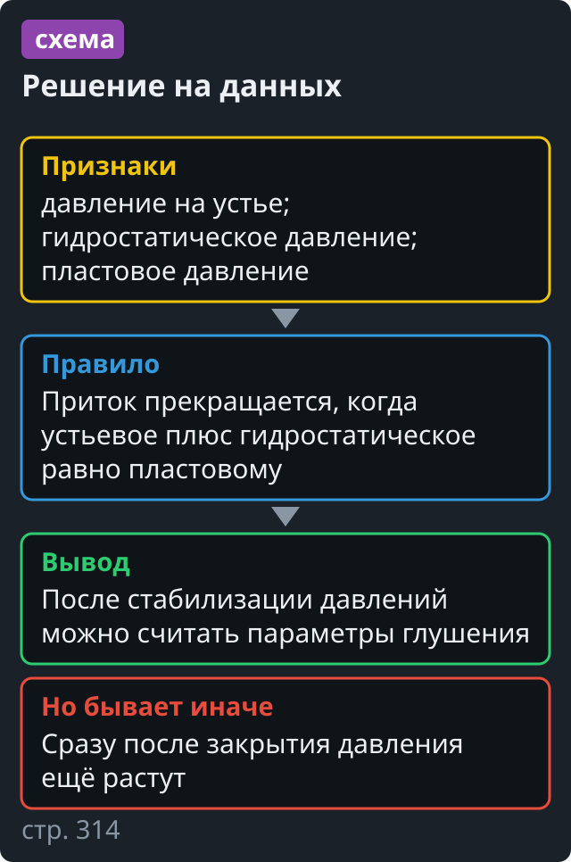
Решение на данных в шаге «Что происходит после закрытия»: признаки, правило, вывод. класс B · схемаАнимация логики шага (признаки → правило → вывод), 15 с, без звука. класс B · схема · шаблон step_procedure; текст и страницы — из слоя
Проверь себя
Часть 3 · шаг 19 из 24 · ≈4 мин · формат: практикум на данных
Как закрывают скважину по шагам
Последовательность перекрытия скважины. Порядок действий при сигнале о проявлении во время бурения и во время спуско-подъёма.
Почему этот шаг здесь
Зная оборудование и физику закрытия, учим сам порядок действий бригады. модельстр. 314, 315, 316
Суть
При сигнале бурение прекращают, рабочую трубу поднимают, чтобы поставить безопасный клапан, и следят, чтобы против превентора было тело трубы. Насосы отключают и проверяют скважину на перелив. Если перелив начался, скважину срочно перекрывают. модельстр. 314, 315, 316
Как это работает
Механизм
Порядок перекрытия зависит от типа скважины, места (суша или море), буровой установки и вида работ: бурение, испытание или СПО. модельстр. 314
Как делает специалист
При сигнале о проявлении бурение (испытание) прекращают. Рабочую трубу поднимают над столом ротора так, чтобы под ней можно было установить безопасный клапан. модельстр. 314
Следят, чтобы против уплотнений превенторов была не муфта, а тело бурильной (или насосно-компрессорной) трубы. модельстр. 314
Отключают буровые насосы и проверяют скважину на самоприток. Если начался перелив, скважину необходимо срочно перекрыть устьевым оборудованием или штуцерами. модельстр. 314, 315
Если проявление возникло при спуско-подъёме, его прекращают, верхний замок трубы ставят над столом ротора и подвешивают колонну на клиньях. модельстр. 316
На колонну ставят безопасный клапан в открытом положении. Затем закрывают его и превентор с трубными плашками. Квадрат приподнимают, клапан открывают и регистрируют давления в колонне, в кольцевом пространстве и приток раствора в амбар. модельстр. 316
Частая ошибка
Скважину закрывают сразу, не останавливая насосы и не глядя, где муфта.
Что это значит для данных
Каждый шаг процедуры — событие со временем: остановка, подъём трубы, отключение насосов, проверка, закрытие. модельстр. 314, 315, 316
Если не записать давления после закрытия, глушение не рассчитать. модельстр. 314, 315, 316
Время от сигнала до закрытия — ключевая метрика готовности бригады. гипотезамодельстр. 314, 315, 316
Решение на данных
Признаки
сигнал о проявлении
перелив при остановленных насосах
ПравилоЕсли перелив начался — срочно перекрыть скважинуВыводПерекрытие и регистрация давленийКонтрпримерНет перелива — скважину не закрывают, продолжают наблюдение
Аналогия
Похоже на регламент реагирования на инцидент: остановить изменения, изолировать, проверить, зафиксировать состояние. модель
Где аналогия не работает: В ИТ можно откатить шаг, а закрыть превентор на муфте — значит не перекрыть скважину.
Как это делается сейчас
Сейчас последовательность закрепляют в регламентах и учебных тревогах; суть шагов та же. гипотезамодельстр. 314, 315, 316
Линза неэффективности
Входные данныеСигнал о проявлении, положение колонныРучные шагиПодъём трубы, установка клапана, закрытие превентораТочки сужденияЕсть ли переливВремяМинутыТипичные ошибкиЗакрыть превентор против муфты
Новые понятия
рабочая труба (квадрат) — Верхняя труба, через которую ротор вращает колонну
стол ротора — Площадка на буровой, через которую проходит колонна
безопасный клапан — Клапан, который ставят на колонну, чтобы закрыть её изнутри
муфта (замок) — Утолщённое соединение труб
самоприток — Перелив раствора из скважины при остановленных насосах
клинья — Захват, на котором подвешивают колонну в столе ротора
амбар — Ёмкость или котлован для сбора раствора
Источник
5 цитат автора со страницами
наблюдение. Порядок перекрытия зависит от типа скважины, места, буровой установки и вида работ. пересказ модели
«Поэтапные работы, связанные с перекрытием скважины, зависят от типа скважины, места ее расположения (на суше или на море), буровой установки (стационарные, морские полупогружные или плавучие буровые установки), типа проводимых работ (в процессе добления, испытания или при СПО).» — автор, стр. 314
наблюдение. При сигнале о проявлении бурение прекращают и поднимают рабочую трубу, чтобы установить безопасный клапан. пересказ модели
«В случае получения сигнала или предупреждения о возникновении проявления вскрываемого или испытываемого пласта процесс бурения (испытания) прекращают, рабочую трубу поднимают над столом ротора на такую высоту, чтобы можно было установить безопасный клапан под рабочей трубой.» — автор, стр. 314
наблюдение. Следят, чтобы против уплотнений превенторов была не муфта, а тело трубы. пересказ модели
«Следят также за тем, чтобы против уплотнений превенторов располагалась не муфта, а бурильные (или насосно-компрессорные) трубы.» — автор, стр. 314
наблюдение. Насосы отключают и проверяют скважину на самоприток; если начался перелив, её необходимо срочно перекрыть. пересказ модели
«Буровые насосы отключают и проверяют скважину на самоприток.» — автор, стр. 314
наблюдение. Если проявление возникло при спуско-подъёме, его прекращают и подвешивают колонну на клиньях. пересказ модели
«В тех случаях, когда проявление возникает во время спускоподъемных операций, то подъем (или спуск) прекращают, верхний замок бурильной трубы размещают над столом ротора и колонну подвешивают на клиньях.» — автор, стр. 316
Иллюстрации
Место шага «Как закрывают скважину по шагам» в главе: на что опирается и куда ведёт. класс B · схема
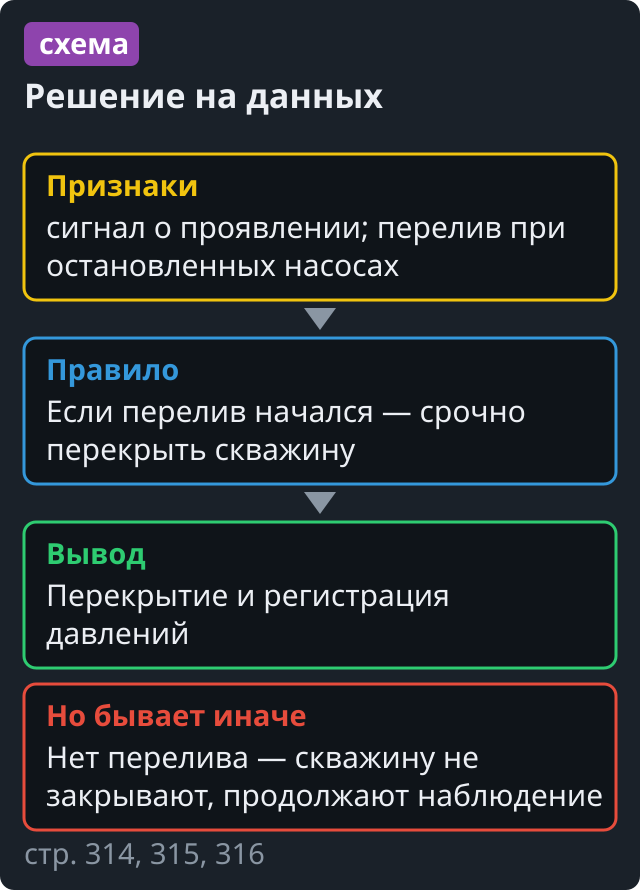
Решение на данных в шаге «Как закрывают скважину по шагам»: признаки, правило, вывод. класс B · схема
Проверь себя
Часть 3 · шаг 20 из 24 · ≈5 мин · формат: ролик-разбор
Закрыть быстро или плавно
Жёсткое и мягкое перекрытие скважины. Чем отличаются перекрытие арматурой (быстрое) и через штуцер (мягкое) и как выбирают способ.
Почему этот шаг здесь
Узнав порядок, разбираем два способа закрытия и их цену. модельстр. 315, 316
Суть
Быстрое перекрытие арматурой даёт минимальный приток, но сильные колебания давления. Мягкое через штуцер уменьшает колебания, но идёт дольше, и притекает больше флюида. Способ выбирают по опыту месторождения и условиям бурения. модельстр. 315, 316
Как это работает
Механизм
Перекрытие арматурой: задвижку 10 штуцерной линии 9 закрывают, затем закрывают превентор 6 с трубными плашками. Потом задвижку 10 открывают, оставляя штуцерную линию закрытой. модельстр. 315
Так скважину перекрывают быстро: приток прекращается за короткое время, объём притока и давление на устье минимальны. модельстр. 315
Мягкое перекрытие: задвижку 10 держат закрытой, клапаны 7 и 4 открытыми. При проявлении задвижку 10 открывают и направляют поток через штуцер 5 и штуцерный манифольд 2 в циркуляционную систему. модельстр. 315
Затем закрывают плашки превентора 6 и медленно перекрывают скважину клапаном в штуцере 5. Окончательно скважину закрывают клапаном 4. модельстр. 315
Как делает специалист
Способ выбирают с учётом опыта на месторождении и условий бурения: разницы между плотностью раствора и прочностью породы на разрыв у башмака колонны, максимально допустимого давления на устье, скорости закрытия оборудования и т. д. модельстр. 315
Клапаны на штуцерной линии 9 и дополнительной линии 15 во время работы открыты. Их используют при аварии или при испытании штуцерного манифольда на давление. модельстр. 315, 316
Если выходят из строя штуцер 5 или клапан 4, поток направляют через резервный штуцер, подключённый параллельно штуцеру 5. модельстр. 316
Нюансы
При быстром перекрытии в скважине возникают значительные колебания давления. Они могут привести к неправильному определению давления на устье — основного параметра контроля. модельстр. 315
Кроме того, при больших давлениях для открытия задвижки 10 нужно сообщение с нагнетательной стороной клапана: перепад давления мешает её открыть. модельстр. 315
Недостаток мягкого перекрытия — большая продолжительность и большие объёмы флюида, поступающие в скважину. Это затрудняет контроль. модельстр. 315
Частая ошибка
Быстрое (жёсткое) закрытие скважины всегда лучше мягкого.
Что это значит для данных
Колебания давления при жёстком закрытии искажают замер давления на устье. модельстр. 315, 316
При мягком закрытии растёт объём притока, это видно по приёмной ёмкости. модельстр. 315, 316
Выбор способа можно оформить как правило по допустимому давлению у башмака. гипотезамодельстр. 315, 316
Решение на данных
Признаки
максимально допустимое давление на устье
прочность пород у башмака
скорость закрытия оборудования
ПравилоЖёсткое — меньше приток, но удары давления; мягкое — меньше ударов, но больше притокВыводВыбор по опыту месторождения и условиямКонтрпримерПри слабых породах у башмака жёсткое закрытие опасно скачком давления
Аналогия
Похоже на аварийное отключение против плавного вывода из работы: быстро, но с ударной нагрузкой, или мягко, но дольше. модель
Где аналогия не работает: При плавном выводе сервиса потери не растут, а при мягком закрытии в скважину успевает войти больше флюида.
Линза неэффективности
Входные данныеДопустимое давление на устье, прочность пород у башмака, скорость закрытияРучные шагиУправление задвижками и штуцеромТочки сужденияКакой способ выбратьВремяСекунды–минутыТипичные ошибкиСчитать один способ всегда лучшим
Новые понятия
задвижка — Запорное устройство на линии
башмак колонны — Нижний конец обсадной колонны
прочность породы на разрыв — Давление, при котором порода трескается
опрессовка (испытание на давление) — Проверка оборудования повышенным давлением
Источник
6 цитат автора со страницами
вывод. Перекрытие арматурой проводится быстро, поэтому объём притока и давление на устье доводят до минимума. пересказ модели
«Такое перекрытие скважины проводится быстро, поэтому проявление из пласта в скважину прекращается в течение короткого промежутка времени, и тем самым объем притока и давление нагнетания на устье скважины доводят до минимума.» — автор, стр. 315
вывод. При быстром перекрытии возникают значительные колебания давления, которые могут исказить параметры контроля. пересказ модели
«Однако при этом в скважине возникают значительные колебания давления.» — автор, стр. 315
наблюдение. При мягком перекрытии поток сначала направляют через штуцер, затем закрывают превентор и медленно закрывают штуцер. пересказ модели
«В данном случае для "мягкого" перекрытия скважины задвижку 10 закрывают, а клапаны 7, 4 открывают.» — автор, стр. 315
наблюдение. Недостаток мягкого перекрытия — большая продолжительность и большие объёмы притока. пересказ модели
«Недостатком "мягкого" перекрытия скважины является большая продолжительность процесса, и большие объемы жидкости из пласта поступают в скважину.» — автор, стр. 315
наблюдение. Способ перекрытия выбирают с учётом опыта месторождения и конкретных условий бурения. пересказ модели
«Выбор способа перекрытия производится с учетом опыта на данном месторождении и конкретных условий бурения (испытания) скважины, т.е. с учетом разницы между плотностями поступающего из скважины бурового раствора и прочностью породы пласта на разрыв у башмака колонны (эквивалентном плотности бурового раствора), максимально допустимого давления на устье скважины, скорости перекрытия противовибросового оборудования и гидравлических клапанов и т.д.» — автор, стр. 315
наблюдение. Если выходят из строя штуцер 5 или клапан 4, поток направляют через резервный штуцер. пересказ модели
«Если выходят из строя штуцер 5 или клапан 4, то поток направляют через резервный штуцер, подключенный параллельно штуцеру 5.» — автор, стр. 316
Иллюстрации
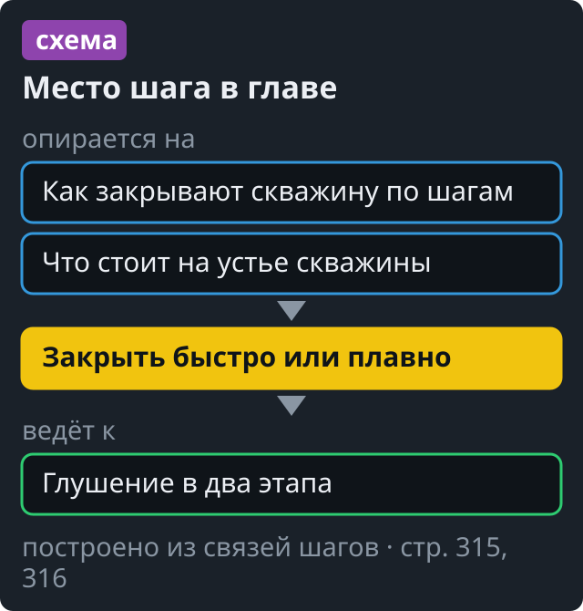
Место шага «Закрыть быстро или плавно» в главе: на что опирается и куда ведёт. класс B · схема
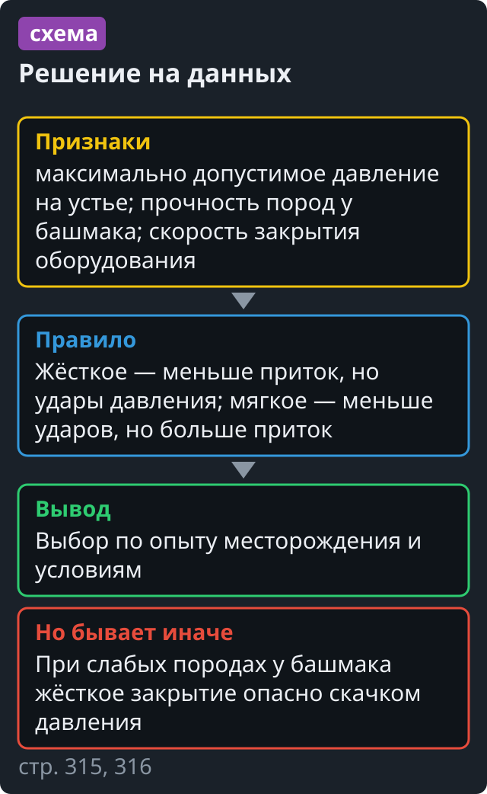
Решение на данных в шаге «Закрыть быстро или плавно»: признаки, правило, вывод. класс B · схемаАнимация логики шага (признаки → правило → вывод), 15 с, без звука. класс B · схема · шаблон step_procedure; текст и страницы — из слоя
Проверь себя
Часть 3 · шаг 21 из 24 · ≈3 мин · формат: практикум на данных
Что делают после закрытия
Глушение скважины после перекрытия. Цель глушения и условия, при которых применяют методы с контролем давления в трубах.
Почему этот шаг здесь
Скважина закрыта; теперь надо удалить приток и вернуть контроль — это второй этап. модельстр. 316
Суть
После перекрытия и замера давлений удаляют поступивший флюид и закачивают более тяжёлый раствор. Используют прямую или обратную циркуляцию. За рубежом применяют два метода: бурильщика и ожидания и утяжеления. модельстр. 316
Как это работает
Механизм
После перекрытия, регистрации и определения параметров надо удалить из скважины поступивший флюид (газ). Затем закачать более тяжёлый раствор и вытеснить первоначальный, чтобы взять скважину под контроль. модельстр. 316
Как делает специалист
Для этого используют прямую или обратную циркуляцию. модельстр. 316
В зарубежной практике применяют два метода глушения с контролем давления в бурильных трубах: «метод бурильщика» и «метод ожидания и веса». модельстр. 316
Их применяют, когда давление в кольцевом пространстве на устье закрытой скважины меньше максимально допустимого давления на разрыв обсадной колонны и устьевого оборудования. модельстр. 316
Что это значит для данных
Решение о методе зависит от давления в затрубье на устье против допустимого. модельстр. 316
Если давление выше допустимого, эти методы неприменимы. модельстр. 316
Допустимые давления колонны и оборудования стоит хранить рядом с данными скважины. гипотезамодельстр. 316
Аналогия
Похоже на восстановление после инцидента: сначала убрать повреждённые данные, затем накатить корректные. модель
Где аналогия не работает: Восстановление можно поставить на паузу, а скважину держат закрытой под давлением всё время.
Линза неэффективности
Входные данныеДавления после закрытия, допустимые давления колонныРучные шагиВыбор метода глушенияТочки сужденияНиже ли давление допустимогоВремяПосле стабилизации давленийТипичные ошибкиНет в главе
Новые понятия
прямая циркуляция — Раствор идёт вниз по трубам и вверх по затрубью
обратная циркуляция — Раствор идёт вниз по затрубью и вверх по трубам
метод бурильщика — Глушение в два этапа
метод ожидания и веса (утяжеления) — Глушение в один этап утяжелённым раствором
Источник
2 цитаты автора со страницами
наблюдение. После перекрытия надо удалить поступивший флюид и закачать более тяжёлый раствор, чтобы взять скважину под контроль. пересказ модели
«После перекрытия скважины, регистрации и определения необходимых параметров надо удалить из скважины жидкость (газ), поступившую из пласта, и закачать необходимый более тяжелый раствор, вытеснить первоначальный раствор для того, чтобы подвести скважину под контроль и продолжить бурение или ее испытание.» — автор, стр. 316
наблюдение. Методы бурильщика и ожидания и веса применяют, когда давление на устье в затрубье меньше максимально допустимого для колонны и оборудования. пересказ модели
«В зарубежной практике применяются два метода глушения скважины с использованием контроля за давлением в бурильных трубах, когда давление в кольцевом пространстве на устье при закрытой скважине меньше максимально допустимого давления на разрыв обсадной колонны и устьевого оборудования: "Метод бурильщика" и "Метод ожидания и веса".» — автор, стр. 316
Иллюстрации
Место шага «Что делают после закрытия» в главе: на что опирается и куда ведёт. класс B · схема
Часть 3 · шаг 22 из 24 · ≈5 мин · формат: практикум на данных
Глушение в два этапа
Метод бурильщика. Как штуцером держат давление при двухэтапном глушении методом бурильщика.
Почему этот шаг здесь
Первый из двух методов глушения: сначала вымыть приток, потом закачать тяжёлый раствор. модельстр. 316, 317
Суть
В методе бурильщика сначала вымывают приток прежним раствором, держа штуцером постоянное давление в трубах. Затем закачивают утяжелённый раствор: давление в трубах плавно снижают, пока тяжёлый раствор не дойдёт до долота. Если в конце давлений нет, скважина под контролем. модельстр. 316, 317
Как это работает
Механизм
Основа метода: при создании циркуляции включают насос, открывают штуцер 5 (рис. 4.16) и регулируют его клапан. Давление в кольцевом пространстве держат равным давлению на устье закрытой скважины плюс давление для коэффициента безопасности. модельстр. 316
Пока насос развивает запланированную подачу, давление в кольцевом пространстве и трубах держат постоянным. Когда насос вышел на подачу глушения, штуцером держат постоянным давление в бурильных трубах. модельстр. 316, 317
Как делает специалист
Когда загазированная пачка выйдет из скважины, циркуляцию прекращают и выдерживают скважину для стабилизации давления. Если давления в трубах и в кольцевом пространстве закрытой скважины равны, проявление ликвидировано. модельстр. 317
Второй этап — нагнетание утяжелённого раствора. Открывают штуцер 5 и включают насос; пока насос не вышел на подачу глушения, штуцером держат постоянным давление в кольцевом пространстве. модельстр. 317
На подаче глушения давление в трубах устанавливают равным давлению при закрытии колонны после выброса, плюс потери на сопротивления в трубах, штуцере, долоте, плюс давление коэффициента безопасности. модельстр. 317
По мере закачки штуцером постоянно снижают давление в трубах, пока утяжелённый раствор не дойдёт до промывочных отверстий долота. Затем давление в трубах держат постоянным до конца циркуляции. модельстр. 317
Когда утяжелённый раствор выходит из скважины, штуцер и скважину закрывают. Если избыточного давления в трубах и в кольцевом пространстве нет, скважина под контролем. модельстр. 317
Частая ошибка
Глушение — это просто закачать тяжёлый раствор как можно быстрее.
Что это значит для данных
Главный управляемый параметр — давление в бурильных трубах, его держат по графику штуцером. модельстр. 316, 317
Если не учесть потери на сопротивления, давление в трубах будет занижено и приток возобновится. модельстр. 316, 317
График давления в трубах по объёму закачки удобно строить заранее и сверять с фактом. гипотезамодельстр. 316, 317
Решение на данных
Признаки
давления в трубах и затрубье после первого этапа
ПравилоЕсли давления равны — проявление ликвидировано, переходят ко второму этапуВыводПосле второго этапа при нулевых давлениях скважина под контролемКонтрпримерЕсли давление в трубах осталось — повторить операции
Аналогия
Похоже на миграцию в два шага: сначала вычистить повреждённое, затем накатить новую схему, держа систему под нагрузкой. модель
Где аналогия не работает: Миграцию можно остановить, а в скважине давление надо держать штуцером непрерывно, иначе снова пойдёт приток.
Как это делается сейчас
Метод бурильщика и сейчас один из основных стандартных методов глушения. гипотезамодельстр. 316, 317
Линза неэффективности
Входные данныеДавления после закрытия, подача глушения, потери на сопротивленияРучные шагиРегулирование штуцера по давлению в трубахТочки сужденияРавны ли давления после первого этапаВремяДве полные циркуляцииТипичные ошибкиДержать постоянным не то давление на этапе
Новые понятия
подача глушения — Заранее выбранная подача насоса для глушения
коэффициент безопасности — Запас давления сверх пластового
промывочные отверстия долота — Отверстия, через которые раствор выходит из долота
избыточное давление — Давление сверх атмосферного на устье закрытой скважины
Источник
6 цитат автора со страницами
наблюдение. В методе бурильщика при создании циркуляции штуцером держат давление в кольцевом пространстве равным давлению на устье закрытой скважины плюс запас безопасности. пересказ модели
«Основа "Метода бурильщика" заключается в следующем. При создании циркуляции включают насос, открывают штуцер 5 (см. рис. 4.16) и его клапан регулируют таким образом, чтобы давление в кольцевом пространстве скважины было равно давлению в кольцевом пространстве на устье закрытой скважины плюс давление, обеспечивающее коэффициент безопасности, добавляемые к давлению на забое скважины во время работы по глушению скважины (выбросов) в динамическом состоянии.» — автор, стр. 316
наблюдение. В течение всего времени, когда насос развивает запланированную подачу, давление в кольцевом пространстве и трубах поддерживают постоянным. пересказ модели
«В течение всего времени, когда насос развивает запланированную скорость циркуляции, в кольцевом пространстве и бурильных трубах поддерживается постоянное давление.» — автор, стр. 316
наблюдение. Если после вымыва пачки давления в трубах и кольцевом пространстве закрытой скважины равны, проявление ликвидировано. пересказ модели
«Если давление в бурильных трубах и в кольцевом пространстве при закрытой скважине равно, то проявление ликвидировано.» — автор, стр. 317
наблюдение. Второй этап — нагнетание в скважину утяжелённого раствора. пересказ модели
«После этого производят второй этап глушения скважины путем нагнетания в скважину утяжеленного бурового раствора.» — автор, стр. 317
наблюдение. Давление в трубах снижают, пока утяжелённый раствор не дойдёт до промывочных отверстий долота. пересказ модели
«Это снижение давления будет происходить до тех пор, пока раствор для глушения скважины не спустится до промывочных отверстий долота.» — автор, стр. 317
наблюдение. Если в трубах и кольцевом пространстве нет избыточного давления, скважина под контролем. пересказ модели
«Если в бурильных трубах и в кольцевом пространстве скважины избыточного давления нет, то скважина находится под контролем и можно проводить запланированные работы.» — автор, стр. 317
Иллюстрации
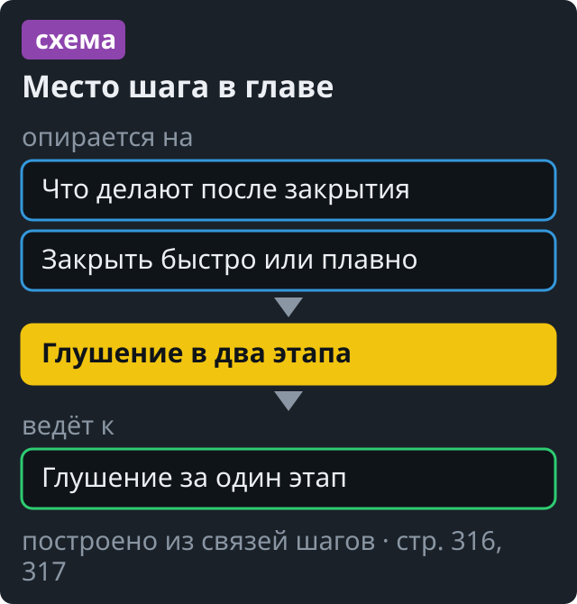
Место шага «Глушение в два этапа» в главе: на что опирается и куда ведёт. класс B · схема
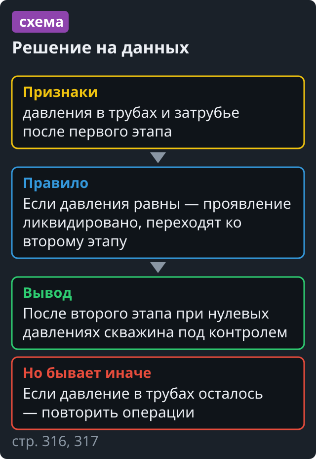
Решение на данных в шаге «Глушение в два этапа»: признаки, правило, вывод. класс B · схемаАнимация логики шага (признаки → правило → вывод), 15 с, без звука. класс B · схема · шаблон step_procedure; текст и страницы — из слоя
Проверь себя
Часть 3 · шаг 23 из 24 · ≈4 мин · формат: практикум на данных
Глушение за один этап
Метод ожидания и веса. Как глушат скважину за один этап утяжелённым раствором.
Почему этот шаг здесь
Второй метод: всё делают за одну циркуляцию, но сначала ждут, пока приготовят тяжёлый раствор. модельстр. 317, 318
Суть
В методе ожидания и веса сразу после закрытия готовят утяжелённый раствор и глушат за один этап. Давление в трубах снижают по графику, пока тяжёлый раствор не дойдёт до долота; в этот момент избыточное давление в трубах должно быть нулевым. Коэффициент безопасности принимают 1 МПа. модельстр. 317, 318
Как это работает
Механизм
При методе ожидания и веса все работы проводят в один этап. Отличие — для циркуляции при глушении сразу используют утяжелённый раствор. модельстр. 317
Как только скважину перекрыли, начинают готовить раствор нужной плотности. После приготовления создают циркуляцию. модельстр. 317
Как делает специалист
Когда насос набирает нужную подачу, на штуцере 5 держат постоянное давление. Когда утяжелённый раствор пошёл в трубы с заданной скоростью, давление в кольцевом пространстве держат равным давлению на устье закрытой скважины плюс коэффициент безопасности. модельстр. 317, 318
В зависимости от состояния скважины и разницы между фактическим давлением на устье и допустимым давлением колонны и оборудования коэффициент безопасности принимают равным 1 МПа. модельстр. 318
Затем давление в трубах снижают по запланированному графику. Когда утяжелённый раствор достиг промывочных отверстий долота, циркуляцию прекращают и закрывают штуцер. модельстр. 318
В этот момент избыточное давление в трубах должно быть равно нулю: гидростатика утяжелённого раствора превысила пластовое давление. модельстр. 318
После проверки снова открывают штуцер и включают насос, держат запланированное давление до конца циркуляции. Из скважины выходит флюид выброса, потом первоначальный раствор, потом раствор глушения; тогда насос останавливают и закрывают штуцерную линию. модельстр. 318
Нюансы
Если в трубах и кольцевом пространстве нет избыточного давления, скважина заглушена. Если давление в трубах есть, возник второй выброс, и операции надо повторить. модельстр. 318
Частая ошибка
Пока готовят тяжёлый раствор, скважину можно оставить без контроля.
Что это значит для данных
Проверка метода — нулевое избыточное давление в трубах, когда тяжёлый раствор дошёл до долота. модельстр. 317, 318
Ненулевое давление после глушения означает второй выброс. модельстр. 317, 318
График снижения давления в трубах можно рассчитать по объёму труб и плотностям заранее. гипотезамодельстр. 317, 318
Решение на данных
Признаки
избыточное давление в трубах после глушения
ПравилоНет давления — скважина заглушена; есть — второй выбросВыводВозобновлять работы или повторять глушениеКонтрпримерНет в главе
Аналогия
Похоже на развёртывание, подготовленное заранее: ждём сборку и накатываем один раз. модель
Где аналогия не работает: Пока идёт сборка, сервис можно оставить как есть, а скважину всё это время держат закрытой под давлением.
Как это делается сейчас
Метод ожидания и утяжеления (wait and weight) и сейчас стандартный метод глушения. гипотезамодельстр. 317, 318
Линза неэффективности
Входные данныеДавления после закрытия, плотность раствора глушения, график давленияРучные шагиПриготовление раствора, регулирование штуцераТочки сужденияНоль ли давление в трубах при подходе раствора к долотуВремяОдна циркуляция плюс приготовление раствораТипичные ошибкиНе повторить операции при остаточном давлении
Новые понятия
утяжелённый раствор (раствор глушения) — Раствор с плотностью, достаточной для превышения пластового давления
второй выброс — Повторное проявление во время глушения
Источник
5 цитат автора со страницами
наблюдение. При методе ожидания и веса все работы проводят в один этап, используя для циркуляции утяжелённый раствор. пересказ модели
«При глушении скважины "Методом ожидания и веса" все работы проводят в один этап.» — автор, стр. 317
наблюдение. Как только скважину перекрывают, начинают приготовление раствора необходимой плотности. пересказ модели
«Поэтому, как только перекрывают скважину, начинают приготовление бурового раствора необходимой плотности.» — автор, стр. 317
наблюдение. Коэффициент безопасности принимают равным 1 МПа в зависимости от состояния скважины и допустимых давлений. пересказ модели
«В зависимости от состояния скважины и разницы между фактическим давлением на устье скважины и допустимым давлением обсадной колонны и устьевого оборудования, числовое значение коэффициента безопасности принимают равным 1 МПа.» — автор, стр. 318
вывод. Когда утяжелённый раствор достигает долота, избыточное давление в трубах должно быть равно нулю. пересказ модели
«В этот момент избыточное давление в бурильных трубах должно быть равно нулю, что говорит о превышении гидростатического давления утяжеленного бурового раствора над пластовым.» — автор, стр. 318
вывод. Если давление в трубах после глушения существует, возник второй выброс, и операции надо повторить. пересказ модели
«Если же давление в трубах существует, то это говорит о возникновении второго выброса, и операции по глушению скважины надо повторить.» — автор, стр. 318
Иллюстрации
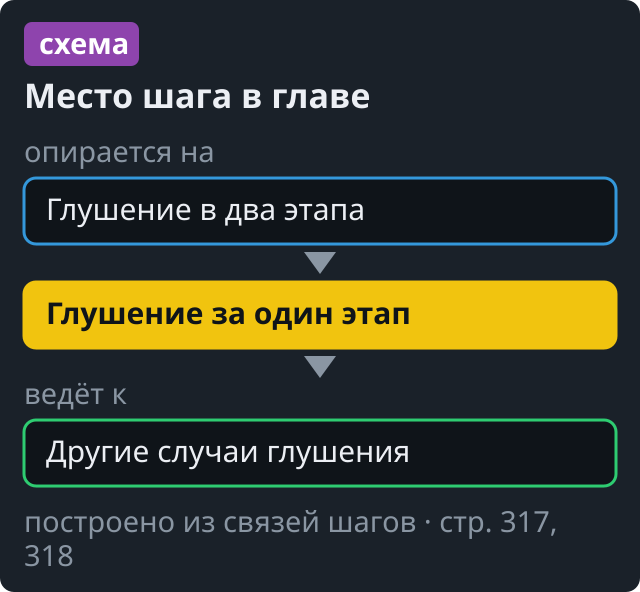
Место шага «Глушение за один этап» в главе: на что опирается и куда ведёт. класс B · схема
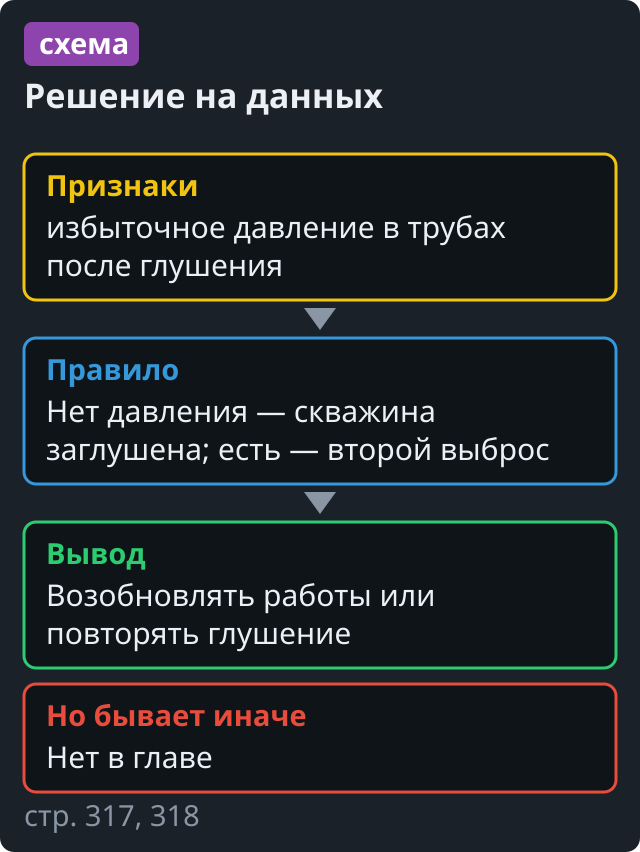
Решение на данных в шаге «Глушение за один этап»: признаки, правило, вывод. класс B · схемаАнимация логики шага (признаки → правило → вывод), 15 с, без звука. класс B · схема · шаблон step_procedure; текст и страницы — из слоя
Проверь себя
Часть 3 · шаг 24 из 24 · ≈2 мин · формат: практикум на данных
Другие случаи глушения
Глушение при испытании пласта и сопутствующий метод. Глушение при выбросе в конце испытания пласта и сопутствующий метод контроля скважины.
Почему этот шаг здесь
Последняя часть: особые случаи и третий, редкий метод. модельстр. 318
Суть
Если выброс возник в конце испытания пласта, раствор циркулируют через клапан испытателя и ставят арматуру на трубы. Методы бурильщика и ожидания шире всего применяются за рубежом. Значительно реже применяют сопутствующий метод: утяжеляют раствор, пока он циркулирует. модельстр. 318
Как это работает
Как делает специалист
Если выброс возник в конце испытания пласта перед подъёмом испытателя, при глушении раствор циркулируют через отверстия циркуляционного клапана испытателя пластов. На верхний конец труб или НКТ монтируют устьевую арматуру. модельстр. 318
Методы бурильщика и ожидания и веса нашли наиболее широкое применение на зарубежных месторождениях. модельстр. 318
Значительно реже применяют сопутствующий метод. Пока скважина не перекрыта и раствор циркулирует, его утяжеляют. модельстр. 318
После перекрытия и регистрации давлений в трубах, в колонне и притока в амбар рассчитывают начальное и конечное давление циркуляции и необходимую плотность. модельстр. 318
Что это значит для данных
Метод выбирают по ситуации: бурение или испытание пласта. модельстр. 318
Описание сопутствующего метода в выданных страницах обрывается. модельстр. 318
Сравнение трёх методов удобно свести в таблицу: этапы, время, объём притока. гипотезамодельстр. 318
Аналогия
Похоже на исправление на лету: правка вносится, пока система работает. модель
Где аналогия не работает: Исправление в ИТ можно откатить, а утяжеление раствора на ходу необратимо меняет давление.
Линза неэффективности
Входные данныеЭтап работ, давления, плотность раствораРучные шагиУтяжеление на ходу, монтаж арматурыТочки сужденияКакой метод выбратьВремяНет в главеТипичные ошибкиНет в главе
Новые понятия
испытатель пластов — Инструмент на трубах для проверки притока из пласта
циркуляционный клапан — Клапан, открывающий путь раствору между трубами и затрубьем
сопутствующий метод — Глушение с утяжелением раствора во время циркуляции
Источник
3 цитаты автора со страницами
наблюдение. Если выброс возник в конце испытания пласта, раствор при глушении циркулируют через циркуляционный клапан испытателя. пересказ модели
«Следует отметить, что если выброс возник в конце испытания пласта перед подъемом испытателя пластов из скважины, то циркуляцию раствора при глушении производят через отверстия циркуляционного клапана испытателя пластов.» — автор, стр. 318
наблюдение. Методы бурильщика и ожидания и веса нашли наиболее широкое применение на зарубежных месторождениях. пересказ модели
«Указанные выше методы глушения скважины нашли наиболее широкое применение на зарубежных месторождениях.» — автор, стр. 318
наблюдение. Значительно реже применяется сопутствующий метод контроля скважины. пересказ модели
«Значительно реже применяется сопутствующий метод контроля скважины, сущность которого заключается в следующем.» — автор, стр. 318
Иллюстрации
Место шага «Другие случаи глушения» в главе: на что опирается и куда ведёт. класс B · схема
Если давление раствора на пласты уменьшают, нужны меры безопасности. Главные из них — прогноз давления, надёжные конструкции и оборудование, раннее обнаружение и ликвидация проявлений.
Как заметить приток в скважину
Показать ответ
Приток флюида меняет поток и свойства раствора на выходе. Практика выделяет восемь признаков, но последние три бывают и по другим причинам.
Почему вдруг бурится быстрее
Показать ответ
Устойчивый рост скорости бурения может означать вход в зону АВПД. Резкий скачок проходки в переходной зоне, как правило, говорит о быстром росте аномальности давления. Но скачок бывает и при провале в каверну.
Уровень в ёмкости растёт
Показать ответ
Рост уровня раствора в приёмной ёмкости — прямой признак притока пластового флюида. Минимальный замечаемый приток равен погрешности уровнемера, умноженной на площадь поверхности раствора. Поэтому меньшая площадь делает контроль чувствительнее.
Как настроить контроль уровня
Показать ответ
Чтобы вовремя заметить приток, приёмную ёмкость изолируют и уменьшают её поверхность. Исходный уровень задают заново и поправляют на добавки и потери. Переключения делают только с ведома бурильщика.
Из скважины выходит больше, чем закачали
Показать ответ
Стенки скважины не дают потоку расшириться, поэтому приток выталкивает раствор быстрее. Индикатор потока замечает проявление, когда расход на выходе выше на 10 % и более. Чем больше подача насосов, тем быстрее обнаружение.
Откуда в растворе газ
Показать ответ
Газ попадает в раствор по разным причинам, не только из-за проявления. При газе выше фона раствор дегазируют и ищут причину. Глины переходной зоны часто загазованы сами по себе.
Когда газ в растворе — тревога
Показать ответ
Признак проявления — газирование продолжается при промывке после остановки бурения. Ещё признак — газ растёт в забойных пачках, когда циркуляцию останавливают. В переходной зоне газ обычно растёт устойчиво, и раствор утяжеляют ступенями.
Газ, который не опасен
Показать ответ
Газ может идти с выбуренной породой при запасе противодавления — тогда он пропадает с остановкой бурения. Газ часто выходит после спуско-подъёма. Если газ поступает, его содержание постоянно контролируют.
Газ — признак, а не причина
Показать ответ
Дебит газа находят по подаче насосов и плотностям чистого и газированного раствора. Газ снижает плотность у устья, но обычно мало меняет давление на забое. Поэтому газирование — признак условий притока, а не причина выброса.
Что показывает давление насосов
Показать ответ
Флюид легче раствора, поэтому баланс давлений в кольцевом пространстве и трубах нарушается, и давление на насосах падает. Газ при подъёме расширяется, и давление снижается всё сильнее. При высоком пластовом давлении давление в трубах может, наоборот, вырасти.
Сколько долить при подъёме труб
Показать ответ
Большинство проявлений связано со спуско-подъёмом: давление на забой падает. При подъёме приток выдаёт себя тем, что доливать приходится меньше, чем объём поднятого металла и плёнки. Уменьшение долива против контрольного более чем на 1 м³ не допускается.
Сколько выльется при спуске труб
Показать ответ
При спуске колонны признак проявления — в приёмной ёмкости больше раствора, чем расчётный объём вытеснения. Если вытеснено больше расчётного и перелив не прекращается, флюид поступает в ствол. Прирост 1 м³ против контрольного указывает на начало проявления.
Раствор меняет свойства
Показать ответ
Приток меняет плотность, водоотдачу, вязкость, напряжение сдвига, сопротивление и хлориды раствора. Эти признаки важны при слабых проявлениях. Но свойства меняются и по другим причинам, поэтому судят по нескольким показателям сразу.
Флюид входит и при перевесе раствора
Показать ответ
При проводке скважины пластовые флюиды поступают в неё постоянно, даже когда забойное давление выше пластового. Такое поступление практически не может создать предвыбросовую ситуацию.
Зачем укрепляют устье газовых скважин
Показать ответ
Резьбы стандартных обсадных труб недостаточно герметичны, и в газовых скважинах часто возникают межколонные проявления. Поэтому устьевую часть усиливают дополнительной обсадной колонной.
Что стоит на устье скважины
Показать ответ
В сложных условиях на устье ставят компоновку из нескольких превенторов, манифольдов и линий. Она позволяет контролировать скважину при высоких давлениях и ликвидировать проявления. При проявлении скважину надо как можно раньше перекрыть, а затем заглушить приток.
Что происходит после закрытия
Показать ответ
После перекрытия приток гаснет не сразу, а постепенно из-за сжимаемости жидкости. Он прекращается, когда давление на устье плюс гидростатика сравняются с пластовым. Давления в трубах и затрубье дают пластовое давление и плотность раствора для глушения.
Как закрывают скважину по шагам
Показать ответ
При сигнале бурение прекращают, рабочую трубу поднимают, чтобы поставить безопасный клапан, и следят, чтобы против превентора было тело трубы. Насосы отключают и проверяют скважину на перелив. Если перелив начался, скважину срочно перекрывают.
Закрыть быстро или плавно
Показать ответ
Быстрое перекрытие арматурой даёт минимальный приток, но сильные колебания давления. Мягкое через штуцер уменьшает колебания, но идёт дольше, и притекает больше флюида. Способ выбирают по опыту месторождения и условиям бурения.
Что делают после закрытия
Показать ответ
После перекрытия и замера давлений удаляют поступивший флюид и закачивают более тяжёлый раствор. Используют прямую или обратную циркуляцию. За рубежом применяют два метода: бурильщика и ожидания и утяжеления.
Глушение в два этапа
Показать ответ
В методе бурильщика сначала вымывают приток прежним раствором, держа штуцером постоянное давление в трубах. Затем закачивают утяжелённый раствор: давление в трубах плавно снижают, пока тяжёлый раствор не дойдёт до долота. Если в конце давлений нет, скважина под контролем.
Глушение за один этап
Показать ответ
В методе ожидания и веса сразу после закрытия готовят утяжелённый раствор и глушат за один этап. Давление в трубах снижают по графику, пока тяжёлый раствор не дойдёт до долота; в этот момент избыточное давление в трубах должно быть нулевым. Коэффициент безопасности принимают 1 МПа.
Другие случаи глушения
Показать ответ
Если выброс возник в конце испытания пласта, раствор циркулируют через клапан испытателя и ставят арматуру на трубы. Методы бурильщика и ожидания шире всего применяются за рубежом. Значительно реже применяют сопутствующий метод: утяжеляют раствор, пока он циркулирует.
Кратко
Конспект
Часть 1. Что нужно для безопасного бурения — Когда газ в растворе — тревога
Что нужно для безопасного бурения. Если давление раствора на пласты уменьшают, нужны меры безопасности. Главные из них — прогноз давления, надёжные конструкции и оборудование, раннее обнаружение и ликвидация проявлений. Для данных: Безопасность держится на прогнозе давления и на раннем обнаружении: оба шага работают с данными.
Как заметить приток в скважину. Приток флюида меняет поток и свойства раствора на выходе. Практика выделяет восемь признаков, но последние три бывают и по другим причинам. Для данных: Признаки — это измерения на поверхности: уровень, расход, газ, скорость бурения, давление.
Почему вдруг бурится быстрее. Устойчивый рост скорости бурения может означать вход в зону АВПД. Резкий скачок проходки в переходной зоне, как правило, говорит о быстром росте аномальности давления. Но скачок бывает и при провале в каверну. Для данных: Механический каротаж — запись скорости бурения по глубине; рост скорости виден на нём раньше других признаков.
Уровень в ёмкости растёт. Рост уровня раствора в приёмной ёмкости — прямой признак притока пластового флюида. Минимальный замечаемый приток равен погрешности уровнемера, умноженной на площадь поверхности раствора. Поэтому меньшая площадь делает контроль чувствительнее. Для данных: Прибор измеряет уровень; объём притока получают умножением на площадь.
Как настроить контроль уровня. Чтобы вовремя заметить приток, приёмную ёмкость изолируют и уменьшают её поверхность. Исходный уровень задают заново и поправляют на добавки и потери. Переключения делают только с ведома бурильщика. Для данных: Исходный уровень — точка отсчёта: без поправок на добавки рост уровня ложно выглядит как приток.
Из скважины выходит больше, чем закачали. Стенки скважины не дают потоку расшириться, поэтому приток выталкивает раствор быстрее. Индикатор потока замечает проявление, когда расход на выходе выше на 10 % и более. Чем больше подача насосов, тем быстрее обнаружение. Для данных: Расходомер меряет поток; приток выводят из разницы входа и выхода.
Откуда в растворе газ. Газ попадает в раствор по разным причинам, не только из-за проявления. При газе выше фона раствор дегазируют и ищут причину. Глины переходной зоны часто загазованы сами по себе. Для данных: Газоанализатор измеряет газ в растворе; причину газа выводят из обстановки бурения.
Когда газ в растворе — тревога. Признак проявления — газирование продолжается при промывке после остановки бурения. Ещё признак — газ растёт в забойных пачках, когда циркуляцию останавливают. В переходной зоне газ обычно растёт устойчиво, и раствор утяжеляют ступенями. Для данных: Важна динамика газа: продолжается ли он после остановки бурения и растёт ли в забойных пачках.
Часть 2. Газ, который не опасен — Зачем укрепляют устье газовых скважин
Газ, который не опасен. Газ может идти с выбуренной породой при запасе противодавления — тогда он пропадает с остановкой бурения. Газ часто выходит после спуско-подъёма. Если газ поступает, его содержание постоянно контролируют. Для данных: Газ с выбуренной породой прекращается с остановкой бурения: это отличает его от притока.
Газ — признак, а не причина. Дебит газа находят по подаче насосов и плотностям чистого и газированного раствора. Газ снижает плотность у устья, но обычно мало меняет давление на забое. Поэтому газирование — признак условий притока, а не причина выброса. Для данных: Дебит газа не меряют напрямую: его выводят из подачи насосов и двух плотностей.
Что показывает давление насосов. Флюид легче раствора, поэтому баланс давлений в кольцевом пространстве и трубах нарушается, и давление на насосах падает. Газ при подъёме расширяется, и давление снижается всё сильнее. При высоком пластовом давлении давление в трубах может, наоборот, вырасти. Для данных: Давление на насосах меряют; высоту и плотность столба флюида выводят из него по формуле.
Сколько долить при подъёме труб. Большинство проявлений связано со спуско-подъёмом: давление на забой падает. При подъёме приток выдаёт себя тем, что доливать приходится меньше, чем объём поднятого металла и плёнки. Уменьшение долива против контрольного более чем на 1 м³ не допускается. Для данных: Сравнивают фактический долив с расчётным: объём металла труб плюс плёнка.
Сколько выльется при спуске труб. При спуске колонны признак проявления — в приёмной ёмкости больше раствора, чем расчётный объём вытеснения. Если вытеснено больше расчётного и перелив не прекращается, флюид поступает в ствол. Прирост 1 м³ против контрольного указывает на начало проявления. Для данных: Сравнивают вытесненный объём с расчётным объёмом спущенного металла.
Раствор меняет свойства. Приток меняет плотность, водоотдачу, вязкость, напряжение сдвига, сопротивление и хлориды раствора. Эти признаки важны при слабых проявлениях. Но свойства меняются и по другим причинам, поэтому судят по нескольким показателям сразу. Для данных: Свойства раствора меряют в лаборатории или датчиками; вывод о притоке делают по сочетанию.
Флюид входит и при перевесе раствора. При проводке скважины пластовые флюиды поступают в неё постоянно, даже когда забойное давление выше пластового. Такое поступление практически не может создать предвыбросовую ситуацию. Для данных: Сам факт газа или флюида в растворе не означает, что давление на забое ниже пластового.
Зачем укрепляют устье газовых скважин. Резьбы стандартных обсадных труб недостаточно герметичны, и в газовых скважинах часто возникают межколонные проявления. Поэтому устьевую часть усиливают дополнительной обсадной колонной. Для данных: Межколонное давление — показатель негерметичности резьб.
Часть 3. Что стоит на устье скважины — Другие случаи глушения
Что стоит на устье скважины. В сложных условиях на устье ставят компоновку из нескольких превенторов, манифольдов и линий. Она позволяет контролировать скважину при высоких давлениях и ликвидировать проявления. При проявлении скважину надо как можно раньше перекрыть, а затем заглушить приток. Для данных: Каждый элемент схемы — состояние «открыт/закрыт», которое можно записывать как событие.
Что происходит после закрытия. После перекрытия приток гаснет не сразу, а постепенно из-за сжимаемости жидкости. Он прекращается, когда давление на устье плюс гидростатика сравняются с пластовым. Давления в трубах и затрубье дают пластовое давление и плотность раствора для глушения. Для данных: Давления в трубах и затрубье после закрытия — главные данные для расчёта глушения.
Как закрывают скважину по шагам. При сигнале бурение прекращают, рабочую трубу поднимают, чтобы поставить безопасный клапан, и следят, чтобы против превентора было тело трубы. Насосы отключают и проверяют скважину на перелив. Если перелив начался, скважину срочно перекрывают. Для данных: Каждый шаг процедуры — событие со временем: остановка, подъём трубы, отключение насосов, проверка, закрытие.
Закрыть быстро или плавно. Быстрое перекрытие арматурой даёт минимальный приток, но сильные колебания давления. Мягкое через штуцер уменьшает колебания, но идёт дольше, и притекает больше флюида. Способ выбирают по опыту месторождения и условиям бурения. Для данных: Колебания давления при жёстком закрытии искажают замер давления на устье.
Что делают после закрытия. После перекрытия и замера давлений удаляют поступивший флюид и закачивают более тяжёлый раствор. Используют прямую или обратную циркуляцию. За рубежом применяют два метода: бурильщика и ожидания и утяжеления. Для данных: Решение о методе зависит от давления в затрубье на устье против допустимого.
Глушение в два этапа. В методе бурильщика сначала вымывают приток прежним раствором, держа штуцером постоянное давление в трубах. Затем закачивают утяжелённый раствор: давление в трубах плавно снижают, пока тяжёлый раствор не дойдёт до долота. Если в конце давлений нет, скважина под контролем. Для данных: Главный управляемый параметр — давление в бурильных трубах, его держат по графику штуцером.
Глушение за один этап. В методе ожидания и веса сразу после закрытия готовят утяжелённый раствор и глушат за один этап. Давление в трубах снижают по графику, пока тяжёлый раствор не дойдёт до долота; в этот момент избыточное давление в трубах должно быть нулевым. Коэффициент безопасности принимают 1 МПа. Для данных: Проверка метода — нулевое избыточное давление в трубах, когда тяжёлый раствор дошёл до долота.
Другие случаи глушения. Если выброс возник в конце испытания пласта, раствор циркулируют через клапан испытателя и ставят арматуру на трубы. Методы бурильщика и ожидания шире всего применяются за рубежом. Значительно реже применяют сопутствующий метод: утяжеляют раствор, пока он циркулирует. Для данных: Метод выбирают по ситуации: бурение или испытание пласта.